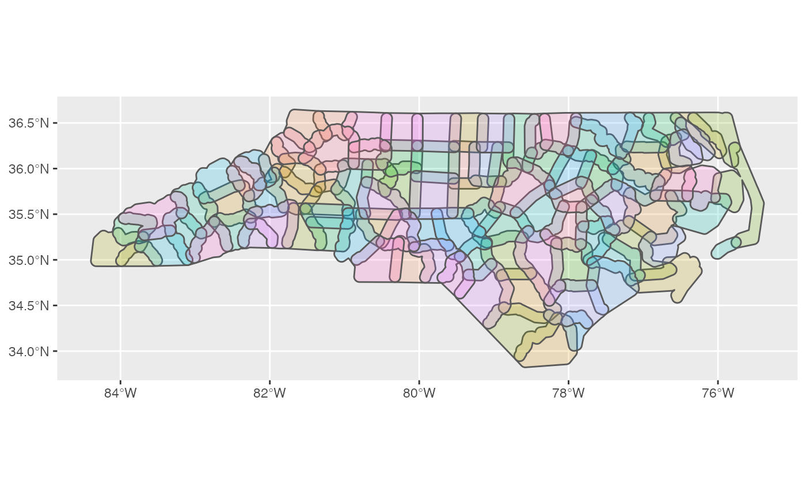
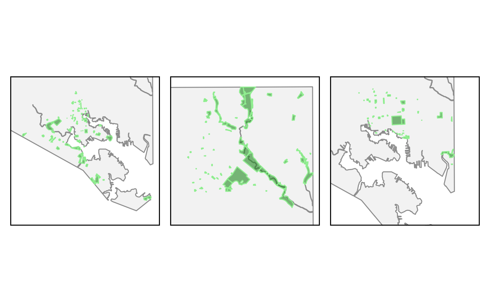
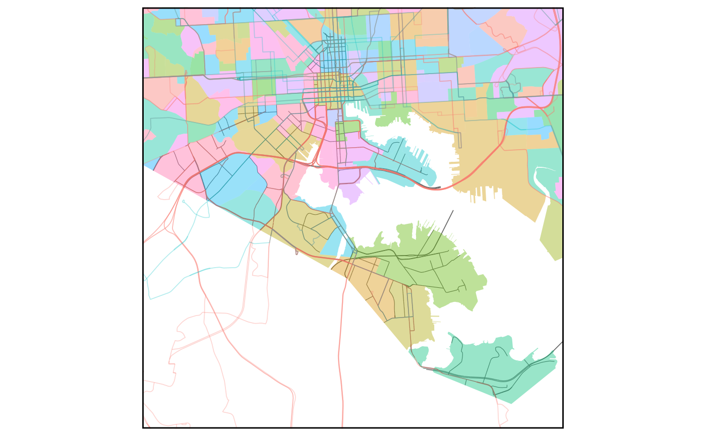

Working with lists of simple feature objects
working-sf-lists.RmdWhen mapping with simple feature objects, it can be helpful to create a list of related objects. A list could be:
- A list of related locations
- A list of different types of data for a single location
- A list of the same type of data for multiple locations
To ease the use of simple feature lists, overedge includes several dedicated functions for creating or modifying these lists along with support for sf lists in most of the key functions.
library(overedge)
library(ggplot2)
library(dplyr)
#>
#> Attaching package: 'dplyr'
#> The following objects are masked from 'package:stats':
#>
#> filter, lag
#> The following objects are masked from 'package:base':
#>
#> intersect, setdiff, setequal, union
library(patchwork)Utility functions for working with sf lists
To start, as_sf_list can turn a sf object into a list and optionally use a grouping column to define how the list is structured.
nc <- sf::st_read(system.file("shape/nc.shp", package = "sf"), quiet = TRUE)
nc_list_name <-
as_sf_list(x = nc, col = "NAME")
str(nc_list_name)#> List of 100
#> $ alamance : sf [1 × 15] (S3: sf/tbl_df/tbl/data.frame)
#> ..$ AREA : num 0.111
#> ..$ PERIMETER: num 1.39
#> ..$ CNTY_ : num 1904
#> ..$ CNTY_ID : num 1904
#> ..$ NAME : chr "Alamance"
#> ..$ FIPS : chr "37001"
#> ..$ FIPSNO : num 37001
#> ..$ CRESS_ID : int 1
#> ..$ BIR74 : num 4672
#> ..$ SID74 : num 13
#> ..$ NWBIR74 : num 1243
#> ..$ BIR79 : num 5767
#> ..$ SID79 : num 11
#> ..$ NWBIR79 : num 1397
#> ..$ geometry :sfc_MULTIPOLYGON of length 1; first list element: List of 1
#> .. ..$ :List of 1
#> .. .. ..$ : num [1:10, 1:2] -79.2 -79.2 -79.5 -79.5 -79.5 ...
#> .. ..- attr(*, "class")= chr [1:3] "XY" "MULTIPOLYGON" "sfg"
#> ..- attr(*, "sf_column")= chr "geometry"
#> ..- attr(*, "agr")= Factor w/ 3 levels "constant","aggregate",..: NA NA NA NA NA NA NA NA NA NA ...
#> .. ..- attr(*, "names")= chr [1:14] "AREA" "PERIMETER" "CNTY_" "CNTY_ID" ...
#> $ alexander : sf [1 × 15] (S3: sf/tbl_df/tbl/data.frame)
#> ..$ AREA : num 0.066
#> ..$ PERIMETER: num 1.07
#> ..$ CNTY_ : num 1950
#> ..$ CNTY_ID : num 1950
#> ..$ NAME : chr "Alexander"
#> ..$ FIPS : chr "37003"
#> ..$ FIPSNO : num 37003
#> ..$ CRESS_ID : int 2
#> ..$ BIR74 : num 1333
#> ..$ SID74 : num 0
#> ..$ NWBIR74 : num 128
#> ..$ BIR79 : num 1683
#> ..$ SID79 : num 2
#> ..$ NWBIR79 : num 150
#> ..$ geometry :sfc_MULTIPOLYGON of length 1; first list element: List of 1
#> .. ..$ :List of 1
#> .. .. ..$ : num [1:17, 1:2] -81.1 -81.1 -81.1 -81.3 -81.3 ...
#> .. ..- attr(*, "class")= chr [1:3] "XY" "MULTIPOLYGON" "sfg"
#> ..- attr(*, "sf_column")= chr "geometry"
#> ..- attr(*, "agr")= Factor w/ 3 levels "constant","aggregate",..: NA NA NA NA NA NA NA NA NA NA ...
#> .. ..- attr(*, "names")= chr [1:14] "AREA" "PERIMETER" "CNTY_" "CNTY_ID" ...
#> $ alleghany : sf [1 × 15] (S3: sf/tbl_df/tbl/data.frame)
#> ..$ AREA : num 0.061
#> ..$ PERIMETER: num 1.23
#> ..$ CNTY_ : num 1827
#> ..$ CNTY_ID : num 1827
#> ..$ NAME : chr "Alleghany"
#> ..$ FIPS : chr "37005"
#> ..$ FIPSNO : num 37005
#> ..$ CRESS_ID : int 3
#> ..$ BIR74 : num 487
#> ..$ SID74 : num 0
#> ..$ NWBIR74 : num 10
#> ..$ BIR79 : num 542
#> ..$ SID79 : num 3
#> ..$ NWBIR79 : num 12
#> ..$ geometry :sfc_MULTIPOLYGON of length 1; first list element: List of 1
#> .. ..$ :List of 1
#> .. .. ..$ : num [1:26, 1:2] -81.2 -81.2 -81.3 -81.3 -81.3 ...
#> .. ..- attr(*, "class")= chr [1:3] "XY" "MULTIPOLYGON" "sfg"
#> ..- attr(*, "sf_column")= chr "geometry"
#> ..- attr(*, "agr")= Factor w/ 3 levels "constant","aggregate",..: NA NA NA NA NA NA NA NA NA NA ...
#> .. ..- attr(*, "names")= chr [1:14] "AREA" "PERIMETER" "CNTY_" "CNTY_ID" ...
#> $ anson : sf [1 × 15] (S3: sf/tbl_df/tbl/data.frame)
#> ..$ AREA : num 0.138
#> ..$ PERIMETER: num 1.62
#> ..$ CNTY_ : num 2096
#> ..$ CNTY_ID : num 2096
#> ..$ NAME : chr "Anson"
#> ..$ FIPS : chr "37007"
#> ..$ FIPSNO : num 37007
#> ..$ CRESS_ID : int 4
#> ..$ BIR74 : num 1570
#> ..$ SID74 : num 15
#> ..$ NWBIR74 : num 952
#> ..$ BIR79 : num 1875
#> ..$ SID79 : num 4
#> ..$ NWBIR79 : num 1161
#> ..$ geometry :sfc_MULTIPOLYGON of length 1; first list element: List of 1
#> .. ..$ :List of 1
#> .. .. ..$ : num [1:27, 1:2] -79.9 -80.3 -80.3 -80.3 -80.2 ...
#> .. ..- attr(*, "class")= chr [1:3] "XY" "MULTIPOLYGON" "sfg"
#> ..- attr(*, "sf_column")= chr "geometry"
#> ..- attr(*, "agr")= Factor w/ 3 levels "constant","aggregate",..: NA NA NA NA NA NA NA NA NA NA ...
#> .. ..- attr(*, "names")= chr [1:14] "AREA" "PERIMETER" "CNTY_" "CNTY_ID" ...
#> $ ashe : sf [1 × 15] (S3: sf/tbl_df/tbl/data.frame)
#> ..$ AREA : num 0.114
#> ..$ PERIMETER: num 1.44
#> ..$ CNTY_ : num 1825
#> ..$ CNTY_ID : num 1825
#> ..$ NAME : chr "Ashe"
#> ..$ FIPS : chr "37009"
#> ..$ FIPSNO : num 37009
#> ..$ CRESS_ID : int 5
#> ..$ BIR74 : num 1091
#> ..$ SID74 : num 1
#> ..$ NWBIR74 : num 10
#> ..$ BIR79 : num 1364
#> ..$ SID79 : num 0
#> ..$ NWBIR79 : num 19
#> ..$ geometry :sfc_MULTIPOLYGON of length 1; first list element: List of 1
#> .. ..$ :List of 1
#> .. .. ..$ : num [1:27, 1:2] -81.5 -81.5 -81.6 -81.6 -81.7 ...
#> .. ..- attr(*, "class")= chr [1:3] "XY" "MULTIPOLYGON" "sfg"
#> ..- attr(*, "sf_column")= chr "geometry"
#> ..- attr(*, "agr")= Factor w/ 3 levels "constant","aggregate",..: NA NA NA NA NA NA NA NA NA NA ...
#> .. ..- attr(*, "names")= chr [1:14] "AREA" "PERIMETER" "CNTY_" "CNTY_ID" ...
#> $ avery : sf [1 × 15] (S3: sf/tbl_df/tbl/data.frame)
#> ..$ AREA : num 0.064
#> ..$ PERIMETER: num 1.21
#> ..$ CNTY_ : num 1892
#> ..$ CNTY_ID : num 1892
#> ..$ NAME : chr "Avery"
#> ..$ FIPS : chr "37011"
#> ..$ FIPSNO : num 37011
#> ..$ CRESS_ID : int 6
#> ..$ BIR74 : num 781
#> ..$ SID74 : num 0
#> ..$ NWBIR74 : num 4
#> ..$ BIR79 : num 977
#> ..$ SID79 : num 0
#> ..$ NWBIR79 : num 5
#> ..$ geometry :sfc_MULTIPOLYGON of length 1; first list element: List of 1
#> .. ..$ :List of 1
#> .. .. ..$ : num [1:28, 1:2] -81.9 -82 -81.9 -81.9 -82 ...
#> .. ..- attr(*, "class")= chr [1:3] "XY" "MULTIPOLYGON" "sfg"
#> ..- attr(*, "sf_column")= chr "geometry"
#> ..- attr(*, "agr")= Factor w/ 3 levels "constant","aggregate",..: NA NA NA NA NA NA NA NA NA NA ...
#> .. ..- attr(*, "names")= chr [1:14] "AREA" "PERIMETER" "CNTY_" "CNTY_ID" ...
#> $ beaufort : sf [1 × 15] (S3: sf/tbl_df/tbl/data.frame)
#> ..$ AREA : num 0.203
#> ..$ PERIMETER: num 3.2
#> ..$ CNTY_ : num 2004
#> ..$ CNTY_ID : num 2004
#> ..$ NAME : chr "Beaufort"
#> ..$ FIPS : chr "37013"
#> ..$ FIPSNO : num 37013
#> ..$ CRESS_ID : int 7
#> ..$ BIR74 : num 2692
#> ..$ SID74 : num 7
#> ..$ NWBIR74 : num 1131
#> ..$ BIR79 : num 2909
#> ..$ SID79 : num 4
#> ..$ NWBIR79 : num 1163
#> ..$ geometry :sfc_MULTIPOLYGON of length 1; first list element: List of 2
#> .. ..$ :List of 1
#> .. .. ..$ : num [1:25, 1:2] -77.1 -77.1 -77.1 -77.2 -77.2 ...
#> .. ..$ :List of 1
#> .. .. ..$ : num [1:11, 1:2] -76.6 -76.6 -76.9 -76.9 -77.2 ...
#> .. ..- attr(*, "class")= chr [1:3] "XY" "MULTIPOLYGON" "sfg"
#> ..- attr(*, "sf_column")= chr "geometry"
#> ..- attr(*, "agr")= Factor w/ 3 levels "constant","aggregate",..: NA NA NA NA NA NA NA NA NA NA ...
#> .. ..- attr(*, "names")= chr [1:14] "AREA" "PERIMETER" "CNTY_" "CNTY_ID" ...
#> $ bertie : sf [1 × 15] (S3: sf/tbl_df/tbl/data.frame)
#> ..$ AREA : num 0.18
#> ..$ PERIMETER: num 2.15
#> ..$ CNTY_ : num 1905
#> ..$ CNTY_ID : num 1905
#> ..$ NAME : chr "Bertie"
#> ..$ FIPS : chr "37015"
#> ..$ FIPSNO : num 37015
#> ..$ CRESS_ID : int 8
#> ..$ BIR74 : num 1324
#> ..$ SID74 : num 6
#> ..$ NWBIR74 : num 921
#> ..$ BIR79 : num 1616
#> ..$ SID79 : num 5
#> ..$ NWBIR79 : num 1161
#> ..$ geometry :sfc_MULTIPOLYGON of length 1; first list element: List of 1
#> .. ..$ :List of 1
#> .. .. ..$ : num [1:45, 1:2] -76.8 -76.8 -76.8 -76.9 -76.9 ...
#> .. ..- attr(*, "class")= chr [1:3] "XY" "MULTIPOLYGON" "sfg"
#> ..- attr(*, "sf_column")= chr "geometry"
#> ..- attr(*, "agr")= Factor w/ 3 levels "constant","aggregate",..: NA NA NA NA NA NA NA NA NA NA ...
#> .. ..- attr(*, "names")= chr [1:14] "AREA" "PERIMETER" "CNTY_" "CNTY_ID" ...
#> $ bladen : sf [1 × 15] (S3: sf/tbl_df/tbl/data.frame)
#> ..$ AREA : num 0.225
#> ..$ PERIMETER: num 2.11
#> ..$ CNTY_ : num 2162
#> ..$ CNTY_ID : num 2162
#> ..$ NAME : chr "Bladen"
#> ..$ FIPS : chr "37017"
#> ..$ FIPSNO : num 37017
#> ..$ CRESS_ID : int 9
#> ..$ BIR74 : num 1782
#> ..$ SID74 : num 8
#> ..$ NWBIR74 : num 818
#> ..$ BIR79 : num 2052
#> ..$ SID79 : num 5
#> ..$ NWBIR79 : num 1023
#> ..$ geometry :sfc_MULTIPOLYGON of length 1; first list element: List of 1
#> .. ..$ :List of 1
#> .. .. ..$ : num [1:31, 1:2] -78.3 -78.3 -78.4 -78.6 -78.7 ...
#> .. ..- attr(*, "class")= chr [1:3] "XY" "MULTIPOLYGON" "sfg"
#> ..- attr(*, "sf_column")= chr "geometry"
#> ..- attr(*, "agr")= Factor w/ 3 levels "constant","aggregate",..: NA NA NA NA NA NA NA NA NA NA ...
#> .. ..- attr(*, "names")= chr [1:14] "AREA" "PERIMETER" "CNTY_" "CNTY_ID" ...
#> $ brunswick : sf [1 × 15] (S3: sf/tbl_df/tbl/data.frame)
#> ..$ AREA : num 0.212
#> ..$ PERIMETER: num 2.02
#> ..$ CNTY_ : num 2241
#> ..$ CNTY_ID : num 2241
#> ..$ NAME : chr "Brunswick"
#> ..$ FIPS : chr "37019"
#> ..$ FIPSNO : num 37019
#> ..$ CRESS_ID : int 10
#> ..$ BIR74 : num 2181
#> ..$ SID74 : num 5
#> ..$ NWBIR74 : num 659
#> ..$ BIR79 : num 2655
#> ..$ SID79 : num 6
#> ..$ NWBIR79 : num 841
#> ..$ geometry :sfc_MULTIPOLYGON of length 1; first list element: List of 1
#> .. ..$ :List of 1
#> .. .. ..$ : num [1:27, 1:2] -78.7 -78.6 -78.6 -78.6 -78.6 ...
#> .. ..- attr(*, "class")= chr [1:3] "XY" "MULTIPOLYGON" "sfg"
#> ..- attr(*, "sf_column")= chr "geometry"
#> ..- attr(*, "agr")= Factor w/ 3 levels "constant","aggregate",..: NA NA NA NA NA NA NA NA NA NA ...
#> .. ..- attr(*, "names")= chr [1:14] "AREA" "PERIMETER" "CNTY_" "CNTY_ID" ...
#> $ buncombe : sf [1 × 15] (S3: sf/tbl_df/tbl/data.frame)
#> ..$ AREA : num 0.168
#> ..$ PERIMETER: num 2
#> ..$ CNTY_ : num 1988
#> ..$ CNTY_ID : num 1988
#> ..$ NAME : chr "Buncombe"
#> ..$ FIPS : chr "37021"
#> ..$ FIPSNO : num 37021
#> ..$ CRESS_ID : int 11
#> ..$ BIR74 : num 7515
#> ..$ SID74 : num 9
#> ..$ NWBIR74 : num 930
#> ..$ BIR79 : num 9956
#> ..$ SID79 : num 18
#> ..$ NWBIR79 : num 1206
#> ..$ geometry :sfc_MULTIPOLYGON of length 1; first list element: List of 1
#> .. ..$ :List of 1
#> .. .. ..$ : num [1:45, 1:2] -82.3 -82.3 -82.4 -82.4 -82.4 ...
#> .. ..- attr(*, "class")= chr [1:3] "XY" "MULTIPOLYGON" "sfg"
#> ..- attr(*, "sf_column")= chr "geometry"
#> ..- attr(*, "agr")= Factor w/ 3 levels "constant","aggregate",..: NA NA NA NA NA NA NA NA NA NA ...
#> .. ..- attr(*, "names")= chr [1:14] "AREA" "PERIMETER" "CNTY_" "CNTY_ID" ...
#> $ burke : sf [1 × 15] (S3: sf/tbl_df/tbl/data.frame)
#> ..$ AREA : num 0.134
#> ..$ PERIMETER: num 1.75
#> ..$ CNTY_ : num 1958
#> ..$ CNTY_ID : num 1958
#> ..$ NAME : chr "Burke"
#> ..$ FIPS : chr "37023"
#> ..$ FIPSNO : num 37023
#> ..$ CRESS_ID : int 12
#> ..$ BIR74 : num 3573
#> ..$ SID74 : num 5
#> ..$ NWBIR74 : num 326
#> ..$ BIR79 : num 4314
#> ..$ SID79 : num 15
#> ..$ NWBIR79 : num 407
#> ..$ geometry :sfc_MULTIPOLYGON of length 1; first list element: List of 1
#> .. ..$ :List of 1
#> .. .. ..$ : num [1:34, 1:2] -81.8 -81.9 -82 -82 -81.9 ...
#> .. ..- attr(*, "class")= chr [1:3] "XY" "MULTIPOLYGON" "sfg"
#> ..- attr(*, "sf_column")= chr "geometry"
#> ..- attr(*, "agr")= Factor w/ 3 levels "constant","aggregate",..: NA NA NA NA NA NA NA NA NA NA ...
#> .. ..- attr(*, "names")= chr [1:14] "AREA" "PERIMETER" "CNTY_" "CNTY_ID" ...
#> $ cabarrus : sf [1 × 15] (S3: sf/tbl_df/tbl/data.frame)
#> ..$ AREA : num 0.091
#> ..$ PERIMETER: num 1.32
#> ..$ CNTY_ : num 2042
#> ..$ CNTY_ID : num 2042
#> ..$ NAME : chr "Cabarrus"
#> ..$ FIPS : chr "37025"
#> ..$ FIPSNO : num 37025
#> ..$ CRESS_ID : int 13
#> ..$ BIR74 : num 4099
#> ..$ SID74 : num 3
#> ..$ NWBIR74 : num 856
#> ..$ BIR79 : num 5669
#> ..$ SID79 : num 20
#> ..$ NWBIR79 : num 1203
#> ..$ geometry :sfc_MULTIPOLYGON of length 1; first list element: List of 1
#> .. ..$ :List of 1
#> .. .. ..$ : num [1:14, 1:2] -80.5 -80.5 -80.7 -80.7 -80.8 ...
#> .. ..- attr(*, "class")= chr [1:3] "XY" "MULTIPOLYGON" "sfg"
#> ..- attr(*, "sf_column")= chr "geometry"
#> ..- attr(*, "agr")= Factor w/ 3 levels "constant","aggregate",..: NA NA NA NA NA NA NA NA NA NA ...
#> .. ..- attr(*, "names")= chr [1:14] "AREA" "PERIMETER" "CNTY_" "CNTY_ID" ...
#> $ caldwell : sf [1 × 15] (S3: sf/tbl_df/tbl/data.frame)
#> ..$ AREA : num 0.122
#> ..$ PERIMETER: num 1.52
#> ..$ CNTY_ : num 1932
#> ..$ CNTY_ID : num 1932
#> ..$ NAME : chr "Caldwell"
#> ..$ FIPS : chr "37027"
#> ..$ FIPSNO : num 37027
#> ..$ CRESS_ID : int 14
#> ..$ BIR74 : num 3609
#> ..$ SID74 : num 6
#> ..$ NWBIR74 : num 309
#> ..$ BIR79 : num 4249
#> ..$ SID79 : num 9
#> ..$ NWBIR79 : num 360
#> ..$ geometry :sfc_MULTIPOLYGON of length 1; first list element: List of 1
#> .. ..$ :List of 1
#> .. .. ..$ : num [1:27, 1:2] -81.3 -81.4 -81.4 -81.5 -81.6 ...
#> .. ..- attr(*, "class")= chr [1:3] "XY" "MULTIPOLYGON" "sfg"
#> ..- attr(*, "sf_column")= chr "geometry"
#> ..- attr(*, "agr")= Factor w/ 3 levels "constant","aggregate",..: NA NA NA NA NA NA NA NA NA NA ...
#> .. ..- attr(*, "names")= chr [1:14] "AREA" "PERIMETER" "CNTY_" "CNTY_ID" ...
#> $ camden : sf [1 × 15] (S3: sf/tbl_df/tbl/data.frame)
#> ..$ AREA : num 0.062
#> ..$ PERIMETER: num 1.55
#> ..$ CNTY_ : num 1834
#> ..$ CNTY_ID : num 1834
#> ..$ NAME : chr "Camden"
#> ..$ FIPS : chr "37029"
#> ..$ FIPSNO : num 37029
#> ..$ CRESS_ID : int 15
#> ..$ BIR74 : num 286
#> ..$ SID74 : num 0
#> ..$ NWBIR74 : num 115
#> ..$ BIR79 : num 350
#> ..$ SID79 : num 2
#> ..$ NWBIR79 : num 139
#> ..$ geometry :sfc_MULTIPOLYGON of length 1; first list element: List of 1
#> .. ..$ :List of 1
#> .. .. ..$ : num [1:24, 1:2] -76 -76 -76 -76.2 -76.2 ...
#> .. ..- attr(*, "class")= chr [1:3] "XY" "MULTIPOLYGON" "sfg"
#> ..- attr(*, "sf_column")= chr "geometry"
#> ..- attr(*, "agr")= Factor w/ 3 levels "constant","aggregate",..: NA NA NA NA NA NA NA NA NA NA ...
#> .. ..- attr(*, "names")= chr [1:14] "AREA" "PERIMETER" "CNTY_" "CNTY_ID" ...
#> $ carteret : sf [1 × 15] (S3: sf/tbl_df/tbl/data.frame)
#> ..$ AREA : num 0.125
#> ..$ PERIMETER: num 2.87
#> ..$ CNTY_ : num 2156
#> ..$ CNTY_ID : num 2156
#> ..$ NAME : chr "Carteret"
#> ..$ FIPS : chr "37031"
#> ..$ FIPSNO : num 37031
#> ..$ CRESS_ID : int 16
#> ..$ BIR74 : num 2414
#> ..$ SID74 : num 5
#> ..$ NWBIR74 : num 341
#> ..$ BIR79 : num 3339
#> ..$ SID79 : num 4
#> ..$ NWBIR79 : num 487
#> ..$ geometry :sfc_MULTIPOLYGON of length 1; first list element: List of 2
#> .. ..$ :List of 1
#> .. .. ..$ : num [1:21, 1:2] -77.1 -77.2 -77.2 -77.1 -77.1 ...
#> .. ..$ :List of 1
#> .. .. ..$ : num [1:9, 1:2] -76.5 -76.6 -76.5 -76.5 -76.4 ...
#> .. ..- attr(*, "class")= chr [1:3] "XY" "MULTIPOLYGON" "sfg"
#> ..- attr(*, "sf_column")= chr "geometry"
#> ..- attr(*, "agr")= Factor w/ 3 levels "constant","aggregate",..: NA NA NA NA NA NA NA NA NA NA ...
#> .. ..- attr(*, "names")= chr [1:14] "AREA" "PERIMETER" "CNTY_" "CNTY_ID" ...
#> $ caswell : sf [1 × 15] (S3: sf/tbl_df/tbl/data.frame)
#> ..$ AREA : num 0.114
#> ..$ PERIMETER: num 1.35
#> ..$ CNTY_ : num 1838
#> ..$ CNTY_ID : num 1838
#> ..$ NAME : chr "Caswell"
#> ..$ FIPS : chr "37033"
#> ..$ FIPSNO : num 37033
#> ..$ CRESS_ID : int 17
#> ..$ BIR74 : num 1035
#> ..$ SID74 : num 2
#> ..$ NWBIR74 : num 550
#> ..$ BIR79 : num 1253
#> ..$ SID79 : num 2
#> ..$ NWBIR79 : num 597
#> ..$ geometry :sfc_MULTIPOLYGON of length 1; first list element: List of 1
#> .. ..$ :List of 1
#> .. .. ..$ : num [1:7, 1:2] -79.5 -79.5 -79.2 -79.1 -79.2 ...
#> .. ..- attr(*, "class")= chr [1:3] "XY" "MULTIPOLYGON" "sfg"
#> ..- attr(*, "sf_column")= chr "geometry"
#> ..- attr(*, "agr")= Factor w/ 3 levels "constant","aggregate",..: NA NA NA NA NA NA NA NA NA NA ...
#> .. ..- attr(*, "names")= chr [1:14] "AREA" "PERIMETER" "CNTY_" "CNTY_ID" ...
#> $ catawba : sf [1 × 15] (S3: sf/tbl_df/tbl/data.frame)
#> ..$ AREA : num 0.106
#> ..$ PERIMETER: num 1.44
#> ..$ CNTY_ : num 1986
#> ..$ CNTY_ID : num 1986
#> ..$ NAME : chr "Catawba"
#> ..$ FIPS : chr "37035"
#> ..$ FIPSNO : num 37035
#> ..$ CRESS_ID : int 18
#> ..$ BIR74 : num 5754
#> ..$ SID74 : num 5
#> ..$ NWBIR74 : num 790
#> ..$ BIR79 : num 6883
#> ..$ SID79 : num 21
#> ..$ NWBIR79 : num 914
#> ..$ geometry :sfc_MULTIPOLYGON of length 1; first list element: List of 1
#> .. ..$ :List of 1
#> .. .. ..$ : num [1:14, 1:2] -81 -81.5 -81.5 -81.4 -81.4 ...
#> .. ..- attr(*, "class")= chr [1:3] "XY" "MULTIPOLYGON" "sfg"
#> ..- attr(*, "sf_column")= chr "geometry"
#> ..- attr(*, "agr")= Factor w/ 3 levels "constant","aggregate",..: NA NA NA NA NA NA NA NA NA NA ...
#> .. ..- attr(*, "names")= chr [1:14] "AREA" "PERIMETER" "CNTY_" "CNTY_ID" ...
#> $ chatham : sf [1 × 15] (S3: sf/tbl_df/tbl/data.frame)
#> ..$ AREA : num 0.18
#> ..$ PERIMETER: num 2.14
#> ..$ CNTY_ : num 1973
#> ..$ CNTY_ID : num 1973
#> ..$ NAME : chr "Chatham"
#> ..$ FIPS : chr "37037"
#> ..$ FIPSNO : num 37037
#> ..$ CRESS_ID : int 19
#> ..$ BIR74 : num 1646
#> ..$ SID74 : num 2
#> ..$ NWBIR74 : num 591
#> ..$ BIR79 : num 2398
#> ..$ SID79 : num 3
#> ..$ NWBIR79 : num 687
#> ..$ geometry :sfc_MULTIPOLYGON of length 1; first list element: List of 1
#> .. ..$ :List of 1
#> .. .. ..$ : num [1:27, 1:2] -79.6 -79.5 -79.2 -79.2 -79.1 ...
#> .. ..- attr(*, "class")= chr [1:3] "XY" "MULTIPOLYGON" "sfg"
#> ..- attr(*, "sf_column")= chr "geometry"
#> ..- attr(*, "agr")= Factor w/ 3 levels "constant","aggregate",..: NA NA NA NA NA NA NA NA NA NA ...
#> .. ..- attr(*, "names")= chr [1:14] "AREA" "PERIMETER" "CNTY_" "CNTY_ID" ...
#> $ cherokee : sf [1 × 15] (S3: sf/tbl_df/tbl/data.frame)
#> ..$ AREA : num 0.12
#> ..$ PERIMETER: num 1.69
#> ..$ CNTY_ : num 2088
#> ..$ CNTY_ID : num 2088
#> ..$ NAME : chr "Cherokee"
#> ..$ FIPS : chr "37039"
#> ..$ FIPSNO : num 37039
#> ..$ CRESS_ID : int 20
#> ..$ BIR74 : num 1027
#> ..$ SID74 : num 2
#> ..$ NWBIR74 : num 32
#> ..$ BIR79 : num 1173
#> ..$ SID79 : num 1
#> ..$ NWBIR79 : num 42
#> ..$ geometry :sfc_MULTIPOLYGON of length 1; first list element: List of 1
#> .. ..$ :List of 1
#> .. .. ..$ : num [1:27, 1:2] -84.3 -84.2 -84.2 -84.1 -84 ...
#> .. ..- attr(*, "class")= chr [1:3] "XY" "MULTIPOLYGON" "sfg"
#> ..- attr(*, "sf_column")= chr "geometry"
#> ..- attr(*, "agr")= Factor w/ 3 levels "constant","aggregate",..: NA NA NA NA NA NA NA NA NA NA ...
#> .. ..- attr(*, "names")= chr [1:14] "AREA" "PERIMETER" "CNTY_" "CNTY_ID" ...
#> $ chowan : sf [1 × 15] (S3: sf/tbl_df/tbl/data.frame)
#> ..$ AREA : num 0.044
#> ..$ PERIMETER: num 1.16
#> ..$ CNTY_ : num 1887
#> ..$ CNTY_ID : num 1887
#> ..$ NAME : chr "Chowan"
#> ..$ FIPS : chr "37041"
#> ..$ FIPSNO : num 37041
#> ..$ CRESS_ID : int 21
#> ..$ BIR74 : num 751
#> ..$ SID74 : num 1
#> ..$ NWBIR74 : num 368
#> ..$ BIR79 : num 899
#> ..$ SID79 : num 1
#> ..$ NWBIR79 : num 491
#> ..$ geometry :sfc_MULTIPOLYGON of length 1; first list element: List of 1
#> .. ..$ :List of 1
#> .. .. ..$ : num [1:17, 1:2] -76.7 -76.6 -76.6 -76.6 -76.6 ...
#> .. ..- attr(*, "class")= chr [1:3] "XY" "MULTIPOLYGON" "sfg"
#> ..- attr(*, "sf_column")= chr "geometry"
#> ..- attr(*, "agr")= Factor w/ 3 levels "constant","aggregate",..: NA NA NA NA NA NA NA NA NA NA ...
#> .. ..- attr(*, "names")= chr [1:14] "AREA" "PERIMETER" "CNTY_" "CNTY_ID" ...
#> $ clay : sf [1 × 15] (S3: sf/tbl_df/tbl/data.frame)
#> ..$ AREA : num 0.051
#> ..$ PERIMETER: num 1.1
#> ..$ CNTY_ : num 2109
#> ..$ CNTY_ID : num 2109
#> ..$ NAME : chr "Clay"
#> ..$ FIPS : chr "37043"
#> ..$ FIPSNO : num 37043
#> ..$ CRESS_ID : int 22
#> ..$ BIR74 : num 284
#> ..$ SID74 : num 0
#> ..$ NWBIR74 : num 1
#> ..$ BIR79 : num 419
#> ..$ SID79 : num 0
#> ..$ NWBIR79 : num 5
#> ..$ geometry :sfc_MULTIPOLYGON of length 1; first list element: List of 1
#> .. ..$ :List of 1
#> .. .. ..$ : num [1:17, 1:2] -83.9 -84 -84 -84 -83.9 ...
#> .. ..- attr(*, "class")= chr [1:3] "XY" "MULTIPOLYGON" "sfg"
#> ..- attr(*, "sf_column")= chr "geometry"
#> ..- attr(*, "agr")= Factor w/ 3 levels "constant","aggregate",..: NA NA NA NA NA NA NA NA NA NA ...
#> .. ..- attr(*, "names")= chr [1:14] "AREA" "PERIMETER" "CNTY_" "CNTY_ID" ...
#> $ cleveland : sf [1 × 15] (S3: sf/tbl_df/tbl/data.frame)
#> ..$ AREA : num 0.118
#> ..$ PERIMETER: num 1.51
#> ..$ CNTY_ : num 2032
#> ..$ CNTY_ID : num 2032
#> ..$ NAME : chr "Cleveland"
#> ..$ FIPS : chr "37045"
#> ..$ FIPSNO : num 37045
#> ..$ CRESS_ID : int 23
#> ..$ BIR74 : num 4866
#> ..$ SID74 : num 10
#> ..$ NWBIR74 : num 1491
#> ..$ BIR79 : num 5526
#> ..$ SID79 : num 21
#> ..$ NWBIR79 : num 1729
#> ..$ geometry :sfc_MULTIPOLYGON of length 1; first list element: List of 1
#> .. ..$ :List of 1
#> .. .. ..$ : num [1:21, 1:2] -81.3 -81.4 -81.8 -81.8 -81.7 ...
#> .. ..- attr(*, "class")= chr [1:3] "XY" "MULTIPOLYGON" "sfg"
#> ..- attr(*, "sf_column")= chr "geometry"
#> ..- attr(*, "agr")= Factor w/ 3 levels "constant","aggregate",..: NA NA NA NA NA NA NA NA NA NA ...
#> .. ..- attr(*, "names")= chr [1:14] "AREA" "PERIMETER" "CNTY_" "CNTY_ID" ...
#> $ columbus : sf [1 × 15] (S3: sf/tbl_df/tbl/data.frame)
#> ..$ AREA : num 0.24
#> ..$ PERIMETER: num 2.37
#> ..$ CNTY_ : num 2232
#> ..$ CNTY_ID : num 2232
#> ..$ NAME : chr "Columbus"
#> ..$ FIPS : chr "37047"
#> ..$ FIPSNO : num 37047
#> ..$ CRESS_ID : int 24
#> ..$ BIR74 : num 3350
#> ..$ SID74 : num 15
#> ..$ NWBIR74 : num 1431
#> ..$ BIR79 : num 4144
#> ..$ SID79 : num 17
#> ..$ NWBIR79 : num 1832
#> ..$ geometry :sfc_MULTIPOLYGON of length 1; first list element: List of 1
#> .. ..$ :List of 1
#> .. .. ..$ : num [1:33, 1:2] -78.7 -79.1 -79 -79 -79 ...
#> .. ..- attr(*, "class")= chr [1:3] "XY" "MULTIPOLYGON" "sfg"
#> ..- attr(*, "sf_column")= chr "geometry"
#> ..- attr(*, "agr")= Factor w/ 3 levels "constant","aggregate",..: NA NA NA NA NA NA NA NA NA NA ...
#> .. ..- attr(*, "names")= chr [1:14] "AREA" "PERIMETER" "CNTY_" "CNTY_ID" ...
#> $ craven : sf [1 × 15] (S3: sf/tbl_df/tbl/data.frame)
#> ..$ AREA : num 0.177
#> ..$ PERIMETER: num 2.92
#> ..$ CNTY_ : num 2119
#> ..$ CNTY_ID : num 2119
#> ..$ NAME : chr "Craven"
#> ..$ FIPS : chr "37049"
#> ..$ FIPSNO : num 37049
#> ..$ CRESS_ID : int 25
#> ..$ BIR74 : num 5868
#> ..$ SID74 : num 13
#> ..$ NWBIR74 : num 1744
#> ..$ BIR79 : num 7595
#> ..$ SID79 : num 18
#> ..$ NWBIR79 : num 2342
#> ..$ geometry :sfc_MULTIPOLYGON of length 1; first list element: List of 2
#> .. ..$ :List of 1
#> .. .. ..$ : num [1:29, 1:2] -76.9 -76.9 -77 -77 -77 ...
#> .. ..$ :List of 1
#> .. .. ..$ : num [1:10, 1:2] -76.6 -76.6 -76.8 -77 -77.1 ...
#> .. ..- attr(*, "class")= chr [1:3] "XY" "MULTIPOLYGON" "sfg"
#> ..- attr(*, "sf_column")= chr "geometry"
#> ..- attr(*, "agr")= Factor w/ 3 levels "constant","aggregate",..: NA NA NA NA NA NA NA NA NA NA ...
#> .. ..- attr(*, "names")= chr [1:14] "AREA" "PERIMETER" "CNTY_" "CNTY_ID" ...
#> $ cumberland : sf [1 × 15] (S3: sf/tbl_df/tbl/data.frame)
#> ..$ AREA : num 0.172
#> ..$ PERIMETER: num 1.83
#> ..$ CNTY_ : num 2090
#> ..$ CNTY_ID : num 2090
#> ..$ NAME : chr "Cumberland"
#> ..$ FIPS : chr "37051"
#> ..$ FIPSNO : num 37051
#> ..$ CRESS_ID : int 26
#> ..$ BIR74 : num 20366
#> ..$ SID74 : num 38
#> ..$ NWBIR74 : num 7043
#> ..$ BIR79 : num 26370
#> ..$ SID79 : num 57
#> ..$ NWBIR79 : num 10614
#> ..$ geometry :sfc_MULTIPOLYGON of length 1; first list element: List of 1
#> .. ..$ :List of 1
#> .. .. ..$ : num [1:29, 1:2] -78.5 -78.5 -78.8 -78.9 -78.9 ...
#> .. ..- attr(*, "class")= chr [1:3] "XY" "MULTIPOLYGON" "sfg"
#> ..- attr(*, "sf_column")= chr "geometry"
#> ..- attr(*, "agr")= Factor w/ 3 levels "constant","aggregate",..: NA NA NA NA NA NA NA NA NA NA ...
#> .. ..- attr(*, "names")= chr [1:14] "AREA" "PERIMETER" "CNTY_" "CNTY_ID" ...
#> $ currituck : sf [1 × 15] (S3: sf/tbl_df/tbl/data.frame)
#> ..$ AREA : num 0.07
#> ..$ PERIMETER: num 2.97
#> ..$ CNTY_ : num 1831
#> ..$ CNTY_ID : num 1831
#> ..$ NAME : chr "Currituck"
#> ..$ FIPS : chr "37053"
#> ..$ FIPSNO : num 37053
#> ..$ CRESS_ID : int 27
#> ..$ BIR74 : num 508
#> ..$ SID74 : num 1
#> ..$ NWBIR74 : num 123
#> ..$ BIR79 : num 830
#> ..$ SID79 : num 2
#> ..$ NWBIR79 : num 145
#> ..$ geometry :sfc_MULTIPOLYGON of length 1; first list element: List of 3
#> .. ..$ :List of 1
#> .. .. ..$ : num [1:26, 1:2] -76 -76 -76 -76 -76.1 ...
#> .. ..$ :List of 1
#> .. .. ..$ : num [1:7, 1:2] -76 -76 -75.9 -75.9 -76 ...
#> .. ..$ :List of 1
#> .. .. ..$ : num [1:5, 1:2] -75.9 -75.9 -75.8 -75.8 -75.9 ...
#> .. ..- attr(*, "class")= chr [1:3] "XY" "MULTIPOLYGON" "sfg"
#> ..- attr(*, "sf_column")= chr "geometry"
#> ..- attr(*, "agr")= Factor w/ 3 levels "constant","aggregate",..: NA NA NA NA NA NA NA NA NA NA ...
#> .. ..- attr(*, "names")= chr [1:14] "AREA" "PERIMETER" "CNTY_" "CNTY_ID" ...
#> $ dare : sf [1 × 15] (S3: sf/tbl_df/tbl/data.frame)
#> ..$ AREA : num 0.094
#> ..$ PERIMETER: num 3.64
#> ..$ CNTY_ : num 2000
#> ..$ CNTY_ID : num 2000
#> ..$ NAME : chr "Dare"
#> ..$ FIPS : chr "37055"
#> ..$ FIPSNO : num 37055
#> ..$ CRESS_ID : int 28
#> ..$ BIR74 : num 521
#> ..$ SID74 : num 0
#> ..$ NWBIR74 : num 43
#> ..$ BIR79 : num 1059
#> ..$ SID79 : num 1
#> ..$ NWBIR79 : num 73
#> ..$ geometry :sfc_MULTIPOLYGON of length 1; first list element: List of 3
#> .. ..$ :List of 1
#> .. .. ..$ : num [1:6, 1:2] -75.8 -75.8 -75.5 -75.7 -75.7 ...
#> .. ..$ :List of 1
#> .. .. ..$ : num [1:9, 1:2] -75.9 -75.9 -76 -76 -75.8 ...
#> .. ..$ :List of 1
#> .. .. ..$ : num [1:9, 1:2] -75.5 -75.5 -75.5 -75.5 -75.7 ...
#> .. ..- attr(*, "class")= chr [1:3] "XY" "MULTIPOLYGON" "sfg"
#> ..- attr(*, "sf_column")= chr "geometry"
#> ..- attr(*, "agr")= Factor w/ 3 levels "constant","aggregate",..: NA NA NA NA NA NA NA NA NA NA ...
#> .. ..- attr(*, "names")= chr [1:14] "AREA" "PERIMETER" "CNTY_" "CNTY_ID" ...
#> $ davidson : sf [1 × 15] (S3: sf/tbl_df/tbl/data.frame)
#> ..$ AREA : num 0.145
#> ..$ PERIMETER: num 1.79
#> ..$ CNTY_ : num 1951
#> ..$ CNTY_ID : num 1951
#> ..$ NAME : chr "Davidson"
#> ..$ FIPS : chr "37057"
#> ..$ FIPSNO : num 37057
#> ..$ CRESS_ID : int 29
#> ..$ BIR74 : num 5509
#> ..$ SID74 : num 8
#> ..$ NWBIR74 : num 736
#> ..$ BIR79 : num 7143
#> ..$ SID79 : num 8
#> ..$ NWBIR79 : num 941
#> ..$ geometry :sfc_MULTIPOLYGON of length 1; first list element: List of 1
#> .. ..$ :List of 1
#> .. .. ..$ : num [1:31, 1:2] -80.1 -80.2 -80.2 -80.3 -80.3 ...
#> .. ..- attr(*, "class")= chr [1:3] "XY" "MULTIPOLYGON" "sfg"
#> ..- attr(*, "sf_column")= chr "geometry"
#> ..- attr(*, "agr")= Factor w/ 3 levels "constant","aggregate",..: NA NA NA NA NA NA NA NA NA NA ...
#> .. ..- attr(*, "names")= chr [1:14] "AREA" "PERIMETER" "CNTY_" "CNTY_ID" ...
#> $ davie : sf [1 × 15] (S3: sf/tbl_df/tbl/data.frame)
#> ..$ AREA : num 0.069
#> ..$ PERIMETER: num 1.2
#> ..$ CNTY_ : num 1948
#> ..$ CNTY_ID : num 1948
#> ..$ NAME : chr "Davie"
#> ..$ FIPS : chr "37059"
#> ..$ FIPSNO : num 37059
#> ..$ CRESS_ID : int 30
#> ..$ BIR74 : num 1207
#> ..$ SID74 : num 1
#> ..$ NWBIR74 : num 148
#> ..$ BIR79 : num 1438
#> ..$ SID79 : num 3
#> ..$ NWBIR79 : num 177
#> ..$ geometry :sfc_MULTIPOLYGON of length 1; first list element: List of 1
#> .. ..$ :List of 1
#> .. .. ..$ : num [1:29, 1:2] -80.5 -80.5 -80.5 -80.6 -80.6 ...
#> .. ..- attr(*, "class")= chr [1:3] "XY" "MULTIPOLYGON" "sfg"
#> ..- attr(*, "sf_column")= chr "geometry"
#> ..- attr(*, "agr")= Factor w/ 3 levels "constant","aggregate",..: NA NA NA NA NA NA NA NA NA NA ...
#> .. ..- attr(*, "names")= chr [1:14] "AREA" "PERIMETER" "CNTY_" "CNTY_ID" ...
#> $ duplin : sf [1 × 15] (S3: sf/tbl_df/tbl/data.frame)
#> ..$ AREA : num 0.204
#> ..$ PERIMETER: num 1.87
#> ..$ CNTY_ : num 2100
#> ..$ CNTY_ID : num 2100
#> ..$ NAME : chr "Duplin"
#> ..$ FIPS : chr "37061"
#> ..$ FIPSNO : num 37061
#> ..$ CRESS_ID : int 31
#> ..$ BIR74 : num 2483
#> ..$ SID74 : num 4
#> ..$ NWBIR74 : num 1061
#> ..$ BIR79 : num 2777
#> ..$ SID79 : num 7
#> ..$ NWBIR79 : num 1227
#> ..$ geometry :sfc_MULTIPOLYGON of length 1; first list element: List of 1
#> .. ..$ :List of 1
#> .. .. ..$ : num [1:30, 1:2] -77.7 -77.9 -77.9 -78 -78 ...
#> .. ..- attr(*, "class")= chr [1:3] "XY" "MULTIPOLYGON" "sfg"
#> ..- attr(*, "sf_column")= chr "geometry"
#> ..- attr(*, "agr")= Factor w/ 3 levels "constant","aggregate",..: NA NA NA NA NA NA NA NA NA NA ...
#> .. ..- attr(*, "names")= chr [1:14] "AREA" "PERIMETER" "CNTY_" "CNTY_ID" ...
#> $ durham : sf [1 × 15] (S3: sf/tbl_df/tbl/data.frame)
#> ..$ AREA : num 0.077
#> ..$ PERIMETER: num 1.27
#> ..$ CNTY_ : num 1908
#> ..$ CNTY_ID : num 1908
#> ..$ NAME : chr "Durham"
#> ..$ FIPS : chr "37063"
#> ..$ FIPSNO : num 37063
#> ..$ CRESS_ID : int 32
#> ..$ BIR74 : num 7970
#> ..$ SID74 : num 16
#> ..$ NWBIR74 : num 3732
#> ..$ BIR79 : num 10432
#> ..$ SID79 : num 22
#> ..$ NWBIR79 : num 4948
#> ..$ geometry :sfc_MULTIPOLYGON of length 1; first list element: List of 1
#> .. ..$ :List of 1
#> .. .. ..$ : num [1:18, 1:2] -79 -79 -78.8 -78.8 -78.8 ...
#> .. ..- attr(*, "class")= chr [1:3] "XY" "MULTIPOLYGON" "sfg"
#> ..- attr(*, "sf_column")= chr "geometry"
#> ..- attr(*, "agr")= Factor w/ 3 levels "constant","aggregate",..: NA NA NA NA NA NA NA NA NA NA ...
#> .. ..- attr(*, "names")= chr [1:14] "AREA" "PERIMETER" "CNTY_" "CNTY_ID" ...
#> $ edgecombe : sf [1 × 15] (S3: sf/tbl_df/tbl/data.frame)
#> ..$ AREA : num 0.131
#> ..$ PERIMETER: num 1.52
#> ..$ CNTY_ : num 1928
#> ..$ CNTY_ID : num 1928
#> ..$ NAME : chr "Edgecombe"
#> ..$ FIPS : chr "37065"
#> ..$ FIPSNO : num 37065
#> ..$ CRESS_ID : int 33
#> ..$ BIR74 : num 3657
#> ..$ SID74 : num 10
#> ..$ NWBIR74 : num 2186
#> ..$ BIR79 : num 4359
#> ..$ SID79 : num 9
#> ..$ NWBIR79 : num 2696
#> ..$ geometry :sfc_MULTIPOLYGON of length 1; first list element: List of 1
#> .. ..$ :List of 1
#> .. .. ..$ : num [1:28, 1:2] -77.7 -77.7 -77.8 -77.8 -77.8 ...
#> .. ..- attr(*, "class")= chr [1:3] "XY" "MULTIPOLYGON" "sfg"
#> ..- attr(*, "sf_column")= chr "geometry"
#> ..- attr(*, "agr")= Factor w/ 3 levels "constant","aggregate",..: NA NA NA NA NA NA NA NA NA NA ...
#> .. ..- attr(*, "names")= chr [1:14] "AREA" "PERIMETER" "CNTY_" "CNTY_ID" ...
#> $ forsyth : sf [1 × 15] (S3: sf/tbl_df/tbl/data.frame)
#> ..$ AREA : num 0.108
#> ..$ PERIMETER: num 1.48
#> ..$ CNTY_ : num 1900
#> ..$ CNTY_ID : num 1900
#> ..$ NAME : chr "Forsyth"
#> ..$ FIPS : chr "37067"
#> ..$ FIPSNO : num 37067
#> ..$ CRESS_ID : int 34
#> ..$ BIR74 : num 11858
#> ..$ SID74 : num 10
#> ..$ NWBIR74 : num 3919
#> ..$ BIR79 : num 15704
#> ..$ SID79 : num 18
#> ..$ NWBIR79 : num 5031
#> ..$ geometry :sfc_MULTIPOLYGON of length 1; first list element: List of 1
#> .. ..$ :List of 1
#> .. .. ..$ : num [1:22, 1:2] -80 -80.1 -80.2 -80.2 -80.3 ...
#> .. ..- attr(*, "class")= chr [1:3] "XY" "MULTIPOLYGON" "sfg"
#> ..- attr(*, "sf_column")= chr "geometry"
#> ..- attr(*, "agr")= Factor w/ 3 levels "constant","aggregate",..: NA NA NA NA NA NA NA NA NA NA ...
#> .. ..- attr(*, "names")= chr [1:14] "AREA" "PERIMETER" "CNTY_" "CNTY_ID" ...
#> $ franklin : sf [1 × 15] (S3: sf/tbl_df/tbl/data.frame)
#> ..$ AREA : num 0.128
#> ..$ PERIMETER: num 1.55
#> ..$ CNTY_ : num 1897
#> ..$ CNTY_ID : num 1897
#> ..$ NAME : chr "Franklin"
#> ..$ FIPS : chr "37069"
#> ..$ FIPSNO : num 37069
#> ..$ CRESS_ID : int 35
#> ..$ BIR74 : num 1399
#> ..$ SID74 : num 2
#> ..$ NWBIR74 : num 736
#> ..$ BIR79 : num 1863
#> ..$ SID79 : num 0
#> ..$ NWBIR79 : num 950
#> ..$ geometry :sfc_MULTIPOLYGON of length 1; first list element: List of 1
#> .. ..$ :List of 1
#> .. .. ..$ : num [1:20, 1:2] -78.3 -78.3 -78.3 -78.3 -78.4 ...
#> .. ..- attr(*, "class")= chr [1:3] "XY" "MULTIPOLYGON" "sfg"
#> ..- attr(*, "sf_column")= chr "geometry"
#> ..- attr(*, "agr")= Factor w/ 3 levels "constant","aggregate",..: NA NA NA NA NA NA NA NA NA NA ...
#> .. ..- attr(*, "names")= chr [1:14] "AREA" "PERIMETER" "CNTY_" "CNTY_ID" ...
#> $ gaston : sf [1 × 15] (S3: sf/tbl_df/tbl/data.frame)
#> ..$ AREA : num 0.091
#> ..$ PERIMETER: num 1.47
#> ..$ CNTY_ : num 2068
#> ..$ CNTY_ID : num 2068
#> ..$ NAME : chr "Gaston"
#> ..$ FIPS : chr "37071"
#> ..$ FIPSNO : num 37071
#> ..$ CRESS_ID : int 36
#> ..$ BIR74 : num 9014
#> ..$ SID74 : num 11
#> ..$ NWBIR74 : num 1523
#> ..$ BIR79 : num 11455
#> ..$ SID79 : num 26
#> ..$ NWBIR79 : num 2194
#> ..$ geometry :sfc_MULTIPOLYGON of length 1; first list element: List of 1
#> .. ..$ :List of 1
#> .. .. ..$ : num [1:19, 1:2] -81.3 -81.3 -81.3 -81.4 -81.4 ...
#> .. ..- attr(*, "class")= chr [1:3] "XY" "MULTIPOLYGON" "sfg"
#> ..- attr(*, "sf_column")= chr "geometry"
#> ..- attr(*, "agr")= Factor w/ 3 levels "constant","aggregate",..: NA NA NA NA NA NA NA NA NA NA ...
#> .. ..- attr(*, "names")= chr [1:14] "AREA" "PERIMETER" "CNTY_" "CNTY_ID" ...
#> $ gates : sf [1 × 15] (S3: sf/tbl_df/tbl/data.frame)
#> ..$ AREA : num 0.091
#> ..$ PERIMETER: num 1.28
#> ..$ CNTY_ : num 1835
#> ..$ CNTY_ID : num 1835
#> ..$ NAME : chr "Gates"
#> ..$ FIPS : chr "37073"
#> ..$ FIPSNO : num 37073
#> ..$ CRESS_ID : int 37
#> ..$ BIR74 : num 420
#> ..$ SID74 : num 0
#> ..$ NWBIR74 : num 254
#> ..$ BIR79 : num 594
#> ..$ SID79 : num 2
#> ..$ NWBIR79 : num 371
#> ..$ geometry :sfc_MULTIPOLYGON of length 1; first list element: List of 1
#> .. ..$ :List of 1
#> .. .. ..$ : num [1:17, 1:2] -76.6 -76.6 -76.6 -76.7 -76.8 ...
#> .. ..- attr(*, "class")= chr [1:3] "XY" "MULTIPOLYGON" "sfg"
#> ..- attr(*, "sf_column")= chr "geometry"
#> ..- attr(*, "agr")= Factor w/ 3 levels "constant","aggregate",..: NA NA NA NA NA NA NA NA NA NA ...
#> .. ..- attr(*, "names")= chr [1:14] "AREA" "PERIMETER" "CNTY_" "CNTY_ID" ...
#> $ graham : sf [1 × 15] (S3: sf/tbl_df/tbl/data.frame)
#> ..$ AREA : num 0.078
#> ..$ PERIMETER: num 1.2
#> ..$ CNTY_ : num 2056
#> ..$ CNTY_ID : num 2056
#> ..$ NAME : chr "Graham"
#> ..$ FIPS : chr "37075"
#> ..$ FIPSNO : num 37075
#> ..$ CRESS_ID : int 38
#> ..$ BIR74 : num 415
#> ..$ SID74 : num 0
#> ..$ NWBIR74 : num 40
#> ..$ BIR79 : num 488
#> ..$ SID79 : num 1
#> ..$ NWBIR79 : num 45
#> ..$ geometry :sfc_MULTIPOLYGON of length 1; first list element: List of 1
#> .. ..$ :List of 1
#> .. .. ..$ : num [1:27, 1:2] -83.7 -83.8 -83.8 -83.8 -83.9 ...
#> .. ..- attr(*, "class")= chr [1:3] "XY" "MULTIPOLYGON" "sfg"
#> ..- attr(*, "sf_column")= chr "geometry"
#> ..- attr(*, "agr")= Factor w/ 3 levels "constant","aggregate",..: NA NA NA NA NA NA NA NA NA NA ...
#> .. ..- attr(*, "names")= chr [1:14] "AREA" "PERIMETER" "CNTY_" "CNTY_ID" ...
#> $ granville : sf [1 × 15] (S3: sf/tbl_df/tbl/data.frame)
#> ..$ AREA : num 0.143
#> ..$ PERIMETER: num 1.66
#> ..$ CNTY_ : num 1840
#> ..$ CNTY_ID : num 1840
#> ..$ NAME : chr "Granville"
#> ..$ FIPS : chr "37077"
#> ..$ FIPSNO : num 37077
#> ..$ CRESS_ID : int 39
#> ..$ BIR74 : num 1671
#> ..$ SID74 : num 4
#> ..$ NWBIR74 : num 930
#> ..$ BIR79 : num 2074
#> ..$ SID79 : num 4
#> ..$ NWBIR79 : num 1058
#> ..$ geometry :sfc_MULTIPOLYGON of length 1; first list element: List of 1
#> .. ..$ :List of 1
#> .. .. ..$ : num [1:17, 1:2] -78.7 -78.8 -78.8 -78.8 -78.8 ...
#> .. ..- attr(*, "class")= chr [1:3] "XY" "MULTIPOLYGON" "sfg"
#> ..- attr(*, "sf_column")= chr "geometry"
#> ..- attr(*, "agr")= Factor w/ 3 levels "constant","aggregate",..: NA NA NA NA NA NA NA NA NA NA ...
#> .. ..- attr(*, "names")= chr [1:14] "AREA" "PERIMETER" "CNTY_" "CNTY_ID" ...
#> $ greene : sf [1 × 15] (S3: sf/tbl_df/tbl/data.frame)
#> ..$ AREA : num 0.07
#> ..$ PERIMETER: num 1.1
#> ..$ CNTY_ : num 2016
#> ..$ CNTY_ID : num 2016
#> ..$ NAME : chr "Greene"
#> ..$ FIPS : chr "37079"
#> ..$ FIPSNO : num 37079
#> ..$ CRESS_ID : int 40
#> ..$ BIR74 : num 870
#> ..$ SID74 : num 4
#> ..$ NWBIR74 : num 534
#> ..$ BIR79 : num 1178
#> ..$ SID79 : num 4
#> ..$ NWBIR79 : num 664
#> ..$ geometry :sfc_MULTIPOLYGON of length 1; first list element: List of 1
#> .. ..$ :List of 1
#> .. .. ..$ : num [1:23, 1:2] -77.8 -77.8 -77.8 -77.8 -77.7 ...
#> .. ..- attr(*, "class")= chr [1:3] "XY" "MULTIPOLYGON" "sfg"
#> ..- attr(*, "sf_column")= chr "geometry"
#> ..- attr(*, "agr")= Factor w/ 3 levels "constant","aggregate",..: NA NA NA NA NA NA NA NA NA NA ...
#> .. ..- attr(*, "names")= chr [1:14] "AREA" "PERIMETER" "CNTY_" "CNTY_ID" ...
#> $ guilford : sf [1 × 15] (S3: sf/tbl_df/tbl/data.frame)
#> ..$ AREA : num 0.17
#> ..$ PERIMETER: num 1.68
#> ..$ CNTY_ : num 1903
#> ..$ CNTY_ID : num 1903
#> ..$ NAME : chr "Guilford"
#> ..$ FIPS : chr "37081"
#> ..$ FIPSNO : num 37081
#> ..$ CRESS_ID : int 41
#> ..$ BIR74 : num 16184
#> ..$ SID74 : num 23
#> ..$ NWBIR74 : num 5483
#> ..$ BIR79 : num 20543
#> ..$ SID79 : num 38
#> ..$ NWBIR79 : num 7089
#> ..$ geometry :sfc_MULTIPOLYGON of length 1; first list element: List of 1
#> .. ..$ :List of 1
#> .. .. ..$ : num [1:6, 1:2] -79.5 -80 -80 -80 -79.5 ...
#> .. ..- attr(*, "class")= chr [1:3] "XY" "MULTIPOLYGON" "sfg"
#> ..- attr(*, "sf_column")= chr "geometry"
#> ..- attr(*, "agr")= Factor w/ 3 levels "constant","aggregate",..: NA NA NA NA NA NA NA NA NA NA ...
#> .. ..- attr(*, "names")= chr [1:14] "AREA" "PERIMETER" "CNTY_" "CNTY_ID" ...
#> $ halifax : sf [1 × 15] (S3: sf/tbl_df/tbl/data.frame)
#> ..$ AREA : num 0.19
#> ..$ PERIMETER: num 2.2
#> ..$ CNTY_ : num 1846
#> ..$ CNTY_ID : num 1846
#> ..$ NAME : chr "Halifax"
#> ..$ FIPS : chr "37083"
#> ..$ FIPSNO : num 37083
#> ..$ CRESS_ID : int 42
#> ..$ BIR74 : num 3608
#> ..$ SID74 : num 18
#> ..$ NWBIR74 : num 2365
#> ..$ BIR79 : num 4463
#> ..$ SID79 : num 17
#> ..$ NWBIR79 : num 2980
#> ..$ geometry :sfc_MULTIPOLYGON of length 1; first list element: List of 1
#> .. ..$ :List of 1
#> .. .. ..$ : num [1:53, 1:2] -77.3 -77.4 -77.4 -77.4 -77.5 ...
#> .. ..- attr(*, "class")= chr [1:3] "XY" "MULTIPOLYGON" "sfg"
#> ..- attr(*, "sf_column")= chr "geometry"
#> ..- attr(*, "agr")= Factor w/ 3 levels "constant","aggregate",..: NA NA NA NA NA NA NA NA NA NA ...
#> .. ..- attr(*, "names")= chr [1:14] "AREA" "PERIMETER" "CNTY_" "CNTY_ID" ...
#> $ harnett : sf [1 × 15] (S3: sf/tbl_df/tbl/data.frame)
#> ..$ AREA : num 0.154
#> ..$ PERIMETER: num 1.68
#> ..$ CNTY_ : num 2030
#> ..$ CNTY_ID : num 2030
#> ..$ NAME : chr "Harnett"
#> ..$ FIPS : chr "37085"
#> ..$ FIPSNO : num 37085
#> ..$ CRESS_ID : int 43
#> ..$ BIR74 : num 3776
#> ..$ SID74 : num 6
#> ..$ NWBIR74 : num 1051
#> ..$ BIR79 : num 4789
#> ..$ SID79 : num 10
#> ..$ NWBIR79 : num 1453
#> ..$ geometry :sfc_MULTIPOLYGON of length 1; first list element: List of 1
#> .. ..$ :List of 1
#> .. .. ..$ : num [1:22, 1:2] -78.6 -78.7 -78.8 -78.9 -78.9 ...
#> .. ..- attr(*, "class")= chr [1:3] "XY" "MULTIPOLYGON" "sfg"
#> ..- attr(*, "sf_column")= chr "geometry"
#> ..- attr(*, "agr")= Factor w/ 3 levels "constant","aggregate",..: NA NA NA NA NA NA NA NA NA NA ...
#> .. ..- attr(*, "names")= chr [1:14] "AREA" "PERIMETER" "CNTY_" "CNTY_ID" ...
#> $ haywood : sf [1 × 15] (S3: sf/tbl_df/tbl/data.frame)
#> ..$ AREA : num 0.144
#> ..$ PERIMETER: num 1.69
#> ..$ CNTY_ : num 1996
#> ..$ CNTY_ID : num 1996
#> ..$ NAME : chr "Haywood"
#> ..$ FIPS : chr "37087"
#> ..$ FIPSNO : num 37087
#> ..$ CRESS_ID : int 44
#> ..$ BIR74 : num 2110
#> ..$ SID74 : num 2
#> ..$ NWBIR74 : num 57
#> ..$ BIR79 : num 2463
#> ..$ SID79 : num 8
#> ..$ NWBIR79 : num 62
#> ..$ geometry :sfc_MULTIPOLYGON of length 1; first list element: List of 1
#> .. ..$ :List of 1
#> .. .. ..$ : num [1:39, 1:2] -82.7 -82.8 -82.9 -83 -83 ...
#> .. ..- attr(*, "class")= chr [1:3] "XY" "MULTIPOLYGON" "sfg"
#> ..- attr(*, "sf_column")= chr "geometry"
#> ..- attr(*, "agr")= Factor w/ 3 levels "constant","aggregate",..: NA NA NA NA NA NA NA NA NA NA ...
#> .. ..- attr(*, "names")= chr [1:14] "AREA" "PERIMETER" "CNTY_" "CNTY_ID" ...
#> $ henderson : sf [1 × 15] (S3: sf/tbl_df/tbl/data.frame)
#> ..$ AREA : num 0.095
#> ..$ PERIMETER: num 1.47
#> ..$ CNTY_ : num 2047
#> ..$ CNTY_ID : num 2047
#> ..$ NAME : chr "Henderson"
#> ..$ FIPS : chr "37089"
#> ..$ FIPSNO : num 37089
#> ..$ CRESS_ID : int 45
#> ..$ BIR74 : num 2574
#> ..$ SID74 : num 5
#> ..$ NWBIR74 : num 158
#> ..$ BIR79 : num 3679
#> ..$ SID79 : num 8
#> ..$ NWBIR79 : num 264
#> ..$ geometry :sfc_MULTIPOLYGON of length 1; first list element: List of 1
#> .. ..$ :List of 1
#> .. .. ..$ : num [1:35, 1:2] -82.6 -82.6 -82.6 -82.6 -82.6 ...
#> .. ..- attr(*, "class")= chr [1:3] "XY" "MULTIPOLYGON" "sfg"
#> ..- attr(*, "sf_column")= chr "geometry"
#> ..- attr(*, "agr")= Factor w/ 3 levels "constant","aggregate",..: NA NA NA NA NA NA NA NA NA NA ...
#> .. ..- attr(*, "names")= chr [1:14] "AREA" "PERIMETER" "CNTY_" "CNTY_ID" ...
#> $ hertford : sf [1 × 15] (S3: sf/tbl_df/tbl/data.frame)
#> ..$ AREA : num 0.097
#> ..$ PERIMETER: num 1.67
#> ..$ CNTY_ : num 1833
#> ..$ CNTY_ID : num 1833
#> ..$ NAME : chr "Hertford"
#> ..$ FIPS : chr "37091"
#> ..$ FIPSNO : num 37091
#> ..$ CRESS_ID : int 46
#> ..$ BIR74 : num 1452
#> ..$ SID74 : num 7
#> ..$ NWBIR74 : num 954
#> ..$ BIR79 : num 1838
#> ..$ SID79 : num 5
#> ..$ NWBIR79 : num 1237
#> ..$ geometry :sfc_MULTIPOLYGON of length 1; first list element: List of 1
#> .. ..$ :List of 1
#> .. .. ..$ : num [1:22, 1:2] -76.7 -77 -77 -77.1 -77.2 ...
#> .. ..- attr(*, "class")= chr [1:3] "XY" "MULTIPOLYGON" "sfg"
#> ..- attr(*, "sf_column")= chr "geometry"
#> ..- attr(*, "agr")= Factor w/ 3 levels "constant","aggregate",..: NA NA NA NA NA NA NA NA NA NA ...
#> .. ..- attr(*, "names")= chr [1:14] "AREA" "PERIMETER" "CNTY_" "CNTY_ID" ...
#> $ hoke : sf [1 × 15] (S3: sf/tbl_df/tbl/data.frame)
#> ..$ AREA : num 0.098
#> ..$ PERIMETER: num 1.26
#> ..$ CNTY_ : num 2097
#> ..$ CNTY_ID : num 2097
#> ..$ NAME : chr "Hoke"
#> ..$ FIPS : chr "37093"
#> ..$ FIPSNO : num 37093
#> ..$ CRESS_ID : int 47
#> ..$ BIR74 : num 1494
#> ..$ SID74 : num 7
#> ..$ NWBIR74 : num 987
#> ..$ BIR79 : num 1706
#> ..$ SID79 : num 6
#> ..$ NWBIR79 : num 1172
#> ..$ geometry :sfc_MULTIPOLYGON of length 1; first list element: List of 1
#> .. ..$ :List of 1
#> .. .. ..$ : num [1:14, 1:2] -79.3 -79.4 -79.4 -79.5 -79.4 ...
#> .. ..- attr(*, "class")= chr [1:3] "XY" "MULTIPOLYGON" "sfg"
#> ..- attr(*, "sf_column")= chr "geometry"
#> ..- attr(*, "agr")= Factor w/ 3 levels "constant","aggregate",..: NA NA NA NA NA NA NA NA NA NA ...
#> .. ..- attr(*, "names")= chr [1:14] "AREA" "PERIMETER" "CNTY_" "CNTY_ID" ...
#> $ hyde : sf [1 × 15] (S3: sf/tbl_df/tbl/data.frame)
#> ..$ AREA : num 0.167
#> ..$ PERIMETER: num 2.71
#> ..$ CNTY_ : num 2099
#> ..$ CNTY_ID : num 2099
#> ..$ NAME : chr "Hyde"
#> ..$ FIPS : chr "37095"
#> ..$ FIPSNO : num 37095
#> ..$ CRESS_ID : int 48
#> ..$ BIR74 : num 338
#> ..$ SID74 : num 0
#> ..$ NWBIR74 : num 134
#> ..$ BIR79 : num 427
#> ..$ SID79 : num 0
#> ..$ NWBIR79 : num 169
#> ..$ geometry :sfc_MULTIPOLYGON of length 1; first list element: List of 2
#> .. ..$ :List of 1
#> .. .. ..$ : num [1:23, 1:2] -76.5 -76.5 -76.6 -76.6 -76.6 ...
#> .. ..$ :List of 1
#> .. .. ..$ : num [1:8, 1:2] -76 -76 -75.9 -75.8 -75.8 ...
#> .. ..- attr(*, "class")= chr [1:3] "XY" "MULTIPOLYGON" "sfg"
#> ..- attr(*, "sf_column")= chr "geometry"
#> ..- attr(*, "agr")= Factor w/ 3 levels "constant","aggregate",..: NA NA NA NA NA NA NA NA NA NA ...
#> .. ..- attr(*, "names")= chr [1:14] "AREA" "PERIMETER" "CNTY_" "CNTY_ID" ...
#> $ iredell : sf [1 × 15] (S3: sf/tbl_df/tbl/data.frame)
#> ..$ AREA : num 0.155
#> ..$ PERIMETER: num 1.78
#> ..$ CNTY_ : num 1947
#> ..$ CNTY_ID : num 1947
#> ..$ NAME : chr "Iredell"
#> ..$ FIPS : chr "37097"
#> ..$ FIPSNO : num 37097
#> ..$ CRESS_ID : int 49
#> ..$ BIR74 : num 4139
#> ..$ SID74 : num 4
#> ..$ NWBIR74 : num 1144
#> ..$ BIR79 : num 5400
#> ..$ SID79 : num 5
#> ..$ NWBIR79 : num 1305
#> ..$ geometry :sfc_MULTIPOLYGON of length 1; first list element: List of 1
#> .. ..$ :List of 1
#> .. .. ..$ : num [1:19, 1:2] -80.7 -80.8 -81 -81 -81 ...
#> .. ..- attr(*, "class")= chr [1:3] "XY" "MULTIPOLYGON" "sfg"
#> ..- attr(*, "sf_column")= chr "geometry"
#> ..- attr(*, "agr")= Factor w/ 3 levels "constant","aggregate",..: NA NA NA NA NA NA NA NA NA NA ...
#> .. ..- attr(*, "names")= chr [1:14] "AREA" "PERIMETER" "CNTY_" "CNTY_ID" ...
#> $ jackson : sf [1 × 15] (S3: sf/tbl_df/tbl/data.frame)
#> ..$ AREA : num 0.125
#> ..$ PERIMETER: num 1.6
#> ..$ CNTY_ : num 2039
#> ..$ CNTY_ID : num 2039
#> ..$ NAME : chr "Jackson"
#> ..$ FIPS : chr "37099"
#> ..$ FIPSNO : num 37099
#> ..$ CRESS_ID : int 50
#> ..$ BIR74 : num 1143
#> ..$ SID74 : num 2
#> ..$ NWBIR74 : num 215
#> ..$ BIR79 : num 1504
#> ..$ SID79 : num 5
#> ..$ NWBIR79 : num 307
#> ..$ geometry :sfc_MULTIPOLYGON of length 1; first list element: List of 1
#> .. ..$ :List of 1
#> .. .. ..$ : num [1:36, 1:2] -83.1 -83.2 -83.1 -83.1 -83.2 ...
#> .. ..- attr(*, "class")= chr [1:3] "XY" "MULTIPOLYGON" "sfg"
#> ..- attr(*, "sf_column")= chr "geometry"
#> ..- attr(*, "agr")= Factor w/ 3 levels "constant","aggregate",..: NA NA NA NA NA NA NA NA NA NA ...
#> .. ..- attr(*, "names")= chr [1:14] "AREA" "PERIMETER" "CNTY_" "CNTY_ID" ...
#> $ johnston : sf [1 × 15] (S3: sf/tbl_df/tbl/data.frame)
#> ..$ AREA : num 0.207
#> ..$ PERIMETER: num 1.85
#> ..$ CNTY_ : num 1989
#> ..$ CNTY_ID : num 1989
#> ..$ NAME : chr "Johnston"
#> ..$ FIPS : chr "37101"
#> ..$ FIPSNO : num 37101
#> ..$ CRESS_ID : int 51
#> ..$ BIR74 : num 3999
#> ..$ SID74 : num 6
#> ..$ NWBIR74 : num 1165
#> ..$ BIR79 : num 4780
#> ..$ SID79 : num 13
#> ..$ NWBIR79 : num 1349
#> ..$ geometry :sfc_MULTIPOLYGON of length 1; first list element: List of 1
#> .. ..$ :List of 1
#> .. .. ..$ : num [1:27, 1:2] -78.5 -78.5 -78.6 -78.6 -78.7 ...
#> .. ..- attr(*, "class")= chr [1:3] "XY" "MULTIPOLYGON" "sfg"
#> ..- attr(*, "sf_column")= chr "geometry"
#> ..- attr(*, "agr")= Factor w/ 3 levels "constant","aggregate",..: NA NA NA NA NA NA NA NA NA NA ...
#> .. ..- attr(*, "names")= chr [1:14] "AREA" "PERIMETER" "CNTY_" "CNTY_ID" ...
#> $ jones : sf [1 × 15] (S3: sf/tbl_df/tbl/data.frame)
#> ..$ AREA : num 0.121
#> ..$ PERIMETER: num 1.98
#> ..$ CNTY_ : num 2091
#> ..$ CNTY_ID : num 2091
#> ..$ NAME : chr "Jones"
#> ..$ FIPS : chr "37103"
#> ..$ FIPSNO : num 37103
#> ..$ CRESS_ID : int 52
#> ..$ BIR74 : num 578
#> ..$ SID74 : num 1
#> ..$ NWBIR74 : num 297
#> ..$ BIR79 : num 650
#> ..$ SID79 : num 2
#> ..$ NWBIR79 : num 305
#> ..$ geometry :sfc_MULTIPOLYGON of length 1; first list element: List of 1
#> .. ..$ :List of 1
#> .. .. ..$ : num [1:31, 1:2] -77 -77.1 -77.1 -77.1 -77.2 ...
#> .. ..- attr(*, "class")= chr [1:3] "XY" "MULTIPOLYGON" "sfg"
#> ..- attr(*, "sf_column")= chr "geometry"
#> ..- attr(*, "agr")= Factor w/ 3 levels "constant","aggregate",..: NA NA NA NA NA NA NA NA NA NA ...
#> .. ..- attr(*, "names")= chr [1:14] "AREA" "PERIMETER" "CNTY_" "CNTY_ID" ...
#> $ lee : sf [1 × 15] (S3: sf/tbl_df/tbl/data.frame)
#> ..$ AREA : num 0.065
#> ..$ PERIMETER: num 1.09
#> ..$ CNTY_ : num 2026
#> ..$ CNTY_ID : num 2026
#> ..$ NAME : chr "Lee"
#> ..$ FIPS : chr "37105"
#> ..$ FIPSNO : num 37105
#> ..$ CRESS_ID : int 53
#> ..$ BIR74 : num 2252
#> ..$ SID74 : num 5
#> ..$ NWBIR74 : num 736
#> ..$ BIR79 : num 2949
#> ..$ SID79 : num 6
#> ..$ NWBIR79 : num 905
#> ..$ geometry :sfc_MULTIPOLYGON of length 1; first list element: List of 1
#> .. ..$ :List of 1
#> .. .. ..$ : num [1:24, 1:2] -79.2 -79.3 -79.3 -79.3 -79.3 ...
#> .. ..- attr(*, "class")= chr [1:3] "XY" "MULTIPOLYGON" "sfg"
#> ..- attr(*, "sf_column")= chr "geometry"
#> ..- attr(*, "agr")= Factor w/ 3 levels "constant","aggregate",..: NA NA NA NA NA NA NA NA NA NA ...
#> .. ..- attr(*, "names")= chr [1:14] "AREA" "PERIMETER" "CNTY_" "CNTY_ID" ...
#> $ lenoir : sf [1 × 15] (S3: sf/tbl_df/tbl/data.frame)
#> ..$ AREA : num 0.104
#> ..$ PERIMETER: num 1.55
#> ..$ CNTY_ : num 2065
#> ..$ CNTY_ID : num 2065
#> ..$ NAME : chr "Lenoir"
#> ..$ FIPS : chr "37107"
#> ..$ FIPSNO : num 37107
#> ..$ CRESS_ID : int 54
#> ..$ BIR74 : num 3589
#> ..$ SID74 : num 10
#> ..$ NWBIR74 : num 1826
#> ..$ BIR79 : num 4225
#> ..$ SID79 : num 14
#> ..$ NWBIR79 : num 2047
#> ..$ geometry :sfc_MULTIPOLYGON of length 1; first list element: List of 1
#> .. ..$ :List of 1
#> .. .. ..$ : num [1:31, 1:2] -77.8 -77.8 -77.8 -77.8 -77.7 ...
#> .. ..- attr(*, "class")= chr [1:3] "XY" "MULTIPOLYGON" "sfg"
#> ..- attr(*, "sf_column")= chr "geometry"
#> ..- attr(*, "agr")= Factor w/ 3 levels "constant","aggregate",..: NA NA NA NA NA NA NA NA NA NA ...
#> .. ..- attr(*, "names")= chr [1:14] "AREA" "PERIMETER" "CNTY_" "CNTY_ID" ...
#> $ lincoln : sf [1 × 15] (S3: sf/tbl_df/tbl/data.frame)
#> ..$ AREA : num 0.078
#> ..$ PERIMETER: num 1.38
#> ..$ CNTY_ : num 2034
#> ..$ CNTY_ID : num 2034
#> ..$ NAME : chr "Lincoln"
#> ..$ FIPS : chr "37109"
#> ..$ FIPSNO : num 37109
#> ..$ CRESS_ID : int 55
#> ..$ BIR74 : num 2216
#> ..$ SID74 : num 8
#> ..$ NWBIR74 : num 302
#> ..$ BIR79 : num 2817
#> ..$ SID79 : num 7
#> ..$ NWBIR79 : num 350
#> ..$ geometry :sfc_MULTIPOLYGON of length 1; first list element: List of 1
#> .. ..$ :List of 1
#> .. .. ..$ : num [1:11, 1:2] -81 -81.4 -81.5 -81.5 -81.5 ...
#> .. ..- attr(*, "class")= chr [1:3] "XY" "MULTIPOLYGON" "sfg"
#> ..- attr(*, "sf_column")= chr "geometry"
#> ..- attr(*, "agr")= Factor w/ 3 levels "constant","aggregate",..: NA NA NA NA NA NA NA NA NA NA ...
#> .. ..- attr(*, "names")= chr [1:14] "AREA" "PERIMETER" "CNTY_" "CNTY_ID" ...
#> $ macon : sf [1 × 15] (S3: sf/tbl_df/tbl/data.frame)
#> ..$ AREA : num 0.131
#> ..$ PERIMETER: num 1.68
#> ..$ CNTY_ : num 2082
#> ..$ CNTY_ID : num 2082
#> ..$ NAME : chr "Macon"
#> ..$ FIPS : chr "37113"
#> ..$ FIPSNO : num 37113
#> ..$ CRESS_ID : int 57
#> ..$ BIR74 : num 797
#> ..$ SID74 : num 0
#> ..$ NWBIR74 : num 9
#> ..$ BIR79 : num 1157
#> ..$ SID79 : num 3
#> ..$ NWBIR79 : num 22
#> ..$ geometry :sfc_MULTIPOLYGON of length 1; first list element: List of 1
#> .. ..$ :List of 1
#> .. .. ..$ : num [1:29, 1:2] -83.1 -83.5 -83.5 -83.6 -83.6 ...
#> .. ..- attr(*, "class")= chr [1:3] "XY" "MULTIPOLYGON" "sfg"
#> ..- attr(*, "sf_column")= chr "geometry"
#> ..- attr(*, "agr")= Factor w/ 3 levels "constant","aggregate",..: NA NA NA NA NA NA NA NA NA NA ...
#> .. ..- attr(*, "names")= chr [1:14] "AREA" "PERIMETER" "CNTY_" "CNTY_ID" ...
#> $ madison : sf [1 × 15] (S3: sf/tbl_df/tbl/data.frame)
#> ..$ AREA : num 0.118
#> ..$ PERIMETER: num 1.6
#> ..$ CNTY_ : num 1946
#> ..$ CNTY_ID : num 1946
#> ..$ NAME : chr "Madison"
#> ..$ FIPS : chr "37115"
#> ..$ FIPSNO : num 37115
#> ..$ CRESS_ID : int 58
#> ..$ BIR74 : num 765
#> ..$ SID74 : num 2
#> ..$ NWBIR74 : num 5
#> ..$ BIR79 : num 926
#> ..$ SID79 : num 2
#> ..$ NWBIR79 : num 3
#> ..$ geometry :sfc_MULTIPOLYGON of length 1; first list element: List of 1
#> .. ..$ :List of 1
#> .. .. ..$ : num [1:30, 1:2] -82.9 -82.9 -82.8 -82.8 -82.8 ...
#> .. ..- attr(*, "class")= chr [1:3] "XY" "MULTIPOLYGON" "sfg"
#> ..- attr(*, "sf_column")= chr "geometry"
#> ..- attr(*, "agr")= Factor w/ 3 levels "constant","aggregate",..: NA NA NA NA NA NA NA NA NA NA ...
#> .. ..- attr(*, "names")= chr [1:14] "AREA" "PERIMETER" "CNTY_" "CNTY_ID" ...
#> $ martin : sf [1 × 15] (S3: sf/tbl_df/tbl/data.frame)
#> ..$ AREA : num 0.118
#> ..$ PERIMETER: num 1.9
#> ..$ CNTY_ : num 1937
#> ..$ CNTY_ID : num 1937
#> ..$ NAME : chr "Martin"
#> ..$ FIPS : chr "37117"
#> ..$ FIPSNO : num 37117
#> ..$ CRESS_ID : int 59
#> ..$ BIR74 : num 1549
#> ..$ SID74 : num 2
#> ..$ NWBIR74 : num 883
#> ..$ BIR79 : num 1849
#> ..$ SID79 : num 1
#> ..$ NWBIR79 : num 1033
#> ..$ geometry :sfc_MULTIPOLYGON of length 1; first list element: List of 1
#> .. ..$ :List of 1
#> .. .. ..$ : num [1:37, 1:2] -77.2 -77.2 -77.3 -77.3 -77.4 ...
#> .. ..- attr(*, "class")= chr [1:3] "XY" "MULTIPOLYGON" "sfg"
#> ..- attr(*, "sf_column")= chr "geometry"
#> ..- attr(*, "agr")= Factor w/ 3 levels "constant","aggregate",..: NA NA NA NA NA NA NA NA NA NA ...
#> .. ..- attr(*, "names")= chr [1:14] "AREA" "PERIMETER" "CNTY_" "CNTY_ID" ...
#> $ mc_dowell : sf [1 × 15] (S3: sf/tbl_df/tbl/data.frame)
#> ..$ AREA : num 0.116
#> ..$ PERIMETER: num 1.66
#> ..$ CNTY_ : num 1964
#> ..$ CNTY_ID : num 1964
#> ..$ NAME : chr "McDowell"
#> ..$ FIPS : chr "37111"
#> ..$ FIPSNO : num 37111
#> ..$ CRESS_ID : int 56
#> ..$ BIR74 : num 1946
#> ..$ SID74 : num 5
#> ..$ NWBIR74 : num 134
#> ..$ BIR79 : num 2215
#> ..$ SID79 : num 5
#> ..$ NWBIR79 : num 128
#> ..$ geometry :sfc_MULTIPOLYGON of length 1; first list element: List of 1
#> .. ..$ :List of 1
#> .. .. ..$ : num [1:35, 1:2] -81.8 -81.8 -81.8 -81.9 -82 ...
#> .. ..- attr(*, "class")= chr [1:3] "XY" "MULTIPOLYGON" "sfg"
#> ..- attr(*, "sf_column")= chr "geometry"
#> ..- attr(*, "agr")= Factor w/ 3 levels "constant","aggregate",..: NA NA NA NA NA NA NA NA NA NA ...
#> .. ..- attr(*, "names")= chr [1:14] "AREA" "PERIMETER" "CNTY_" "CNTY_ID" ...
#> $ mecklenburg : sf [1 × 15] (S3: sf/tbl_df/tbl/data.frame)
#> ..$ AREA : num 0.143
#> ..$ PERIMETER: num 1.89
#> ..$ CNTY_ : num 2041
#> ..$ CNTY_ID : num 2041
#> ..$ NAME : chr "Mecklenburg"
#> ..$ FIPS : chr "37119"
#> ..$ FIPSNO : num 37119
#> ..$ CRESS_ID : int 60
#> ..$ BIR74 : num 21588
#> ..$ SID74 : num 44
#> ..$ NWBIR74 : num 8027
#> ..$ BIR79 : num 30757
#> ..$ SID79 : num 35
#> ..$ NWBIR79 : num 11631
#> ..$ geometry :sfc_MULTIPOLYGON of length 1; first list element: List of 1
#> .. ..$ :List of 1
#> .. .. ..$ : num [1:31, 1:2] -81 -81 -81 -81 -81 ...
#> .. ..- attr(*, "class")= chr [1:3] "XY" "MULTIPOLYGON" "sfg"
#> ..- attr(*, "sf_column")= chr "geometry"
#> ..- attr(*, "agr")= Factor w/ 3 levels "constant","aggregate",..: NA NA NA NA NA NA NA NA NA NA ...
#> .. ..- attr(*, "names")= chr [1:14] "AREA" "PERIMETER" "CNTY_" "CNTY_ID" ...
#> $ mitchell : sf [1 × 15] (S3: sf/tbl_df/tbl/data.frame)
#> ..$ AREA : num 0.059
#> ..$ PERIMETER: num 1.32
#> ..$ CNTY_ : num 1927
#> ..$ CNTY_ID : num 1927
#> ..$ NAME : chr "Mitchell"
#> ..$ FIPS : chr "37121"
#> ..$ FIPSNO : num 37121
#> ..$ CRESS_ID : int 61
#> ..$ BIR74 : num 671
#> ..$ SID74 : num 0
#> ..$ NWBIR74 : num 1
#> ..$ BIR79 : num 919
#> ..$ SID79 : num 2
#> ..$ NWBIR79 : num 4
#> ..$ geometry :sfc_MULTIPOLYGON of length 1; first list element: List of 1
#> .. ..$ :List of 1
#> .. .. ..$ : num [1:34, 1:2] -82.1 -82.1 -82.1 -82.1 -82.2 ...
#> .. ..- attr(*, "class")= chr [1:3] "XY" "MULTIPOLYGON" "sfg"
#> ..- attr(*, "sf_column")= chr "geometry"
#> ..- attr(*, "agr")= Factor w/ 3 levels "constant","aggregate",..: NA NA NA NA NA NA NA NA NA NA ...
#> .. ..- attr(*, "names")= chr [1:14] "AREA" "PERIMETER" "CNTY_" "CNTY_ID" ...
#> $ montgomery : sf [1 × 15] (S3: sf/tbl_df/tbl/data.frame)
#> ..$ AREA : num 0.13
#> ..$ PERIMETER: num 1.73
#> ..$ CNTY_ : num 2044
#> ..$ CNTY_ID : num 2044
#> ..$ NAME : chr "Montgomery"
#> ..$ FIPS : chr "37123"
#> ..$ FIPSNO : num 37123
#> ..$ CRESS_ID : int 62
#> ..$ BIR74 : num 1258
#> ..$ SID74 : num 3
#> ..$ NWBIR74 : num 472
#> ..$ BIR79 : num 1598
#> ..$ SID79 : num 8
#> ..$ NWBIR79 : num 588
#> ..$ geometry :sfc_MULTIPOLYGON of length 1; first list element: List of 1
#> .. ..$ :List of 1
#> .. .. ..$ : num [1:24, 1:2] -80.1 -80.1 -80.1 -80.1 -80.1 ...
#> .. ..- attr(*, "class")= chr [1:3] "XY" "MULTIPOLYGON" "sfg"
#> ..- attr(*, "sf_column")= chr "geometry"
#> ..- attr(*, "agr")= Factor w/ 3 levels "constant","aggregate",..: NA NA NA NA NA NA NA NA NA NA ...
#> .. ..- attr(*, "names")= chr [1:14] "AREA" "PERIMETER" "CNTY_" "CNTY_ID" ...
#> $ moore : sf [1 × 15] (S3: sf/tbl_df/tbl/data.frame)
#> ..$ AREA : num 0.181
#> ..$ PERIMETER: num 1.98
#> ..$ CNTY_ : num 2040
#> ..$ CNTY_ID : num 2040
#> ..$ NAME : chr "Moore"
#> ..$ FIPS : chr "37125"
#> ..$ FIPSNO : num 37125
#> ..$ CRESS_ID : int 63
#> ..$ BIR74 : num 2648
#> ..$ SID74 : num 5
#> ..$ NWBIR74 : num 844
#> ..$ BIR79 : num 3534
#> ..$ SID79 : num 5
#> ..$ NWBIR79 : num 1151
#> ..$ geometry :sfc_MULTIPOLYGON of length 1; first list element: List of 1
#> .. ..$ :List of 1
#> .. .. ..$ : num [1:29, 1:2] -79.6 -79.6 -79.7 -79.8 -79.6 ...
#> .. ..- attr(*, "class")= chr [1:3] "XY" "MULTIPOLYGON" "sfg"
#> ..- attr(*, "sf_column")= chr "geometry"
#> ..- attr(*, "agr")= Factor w/ 3 levels "constant","aggregate",..: NA NA NA NA NA NA NA NA NA NA ...
#> .. ..- attr(*, "names")= chr [1:14] "AREA" "PERIMETER" "CNTY_" "CNTY_ID" ...
#> $ nash : sf [1 × 15] (S3: sf/tbl_df/tbl/data.frame)
#> ..$ AREA : num 0.142
#> ..$ PERIMETER: num 1.64
#> ..$ CNTY_ : num 1913
#> ..$ CNTY_ID : num 1913
#> ..$ NAME : chr "Nash"
#> ..$ FIPS : chr "37127"
#> ..$ FIPSNO : num 37127
#> ..$ CRESS_ID : int 64
#> ..$ BIR74 : num 4021
#> ..$ SID74 : num 8
#> ..$ NWBIR74 : num 1851
#> ..$ BIR79 : num 5189
#> ..$ SID79 : num 7
#> ..$ NWBIR79 : num 2274
#> ..$ geometry :sfc_MULTIPOLYGON of length 1; first list element: List of 1
#> .. ..$ :List of 1
#> .. .. ..$ : num [1:23, 1:2] -78.2 -78.2 -78.2 -78.2 -78.3 ...
#> .. ..- attr(*, "class")= chr [1:3] "XY" "MULTIPOLYGON" "sfg"
#> ..- attr(*, "sf_column")= chr "geometry"
#> ..- attr(*, "agr")= Factor w/ 3 levels "constant","aggregate",..: NA NA NA NA NA NA NA NA NA NA ...
#> .. ..- attr(*, "names")= chr [1:14] "AREA" "PERIMETER" "CNTY_" "CNTY_ID" ...
#> $ new_hanover : sf [1 × 15] (S3: sf/tbl_df/tbl/data.frame)
#> ..$ AREA : num 0.042
#> ..$ PERIMETER: num 0.999
#> ..$ CNTY_ : num 2238
#> ..$ CNTY_ID : num 2238
#> ..$ NAME : chr "New Hanover"
#> ..$ FIPS : chr "37129"
#> ..$ FIPSNO : num 37129
#> ..$ CRESS_ID : int 65
#> ..$ BIR74 : num 5526
#> ..$ SID74 : num 12
#> ..$ NWBIR74 : num 1633
#> ..$ BIR79 : num 6917
#> ..$ SID79 : num 9
#> ..$ NWBIR79 : num 2100
#> ..$ geometry :sfc_MULTIPOLYGON of length 1; first list element: List of 1
#> .. ..$ :List of 1
#> .. .. ..$ : num [1:23, 1:2] -78 -78 -78 -78 -78 ...
#> .. ..- attr(*, "class")= chr [1:3] "XY" "MULTIPOLYGON" "sfg"
#> ..- attr(*, "sf_column")= chr "geometry"
#> ..- attr(*, "agr")= Factor w/ 3 levels "constant","aggregate",..: NA NA NA NA NA NA NA NA NA NA ...
#> .. ..- attr(*, "names")= chr [1:14] "AREA" "PERIMETER" "CNTY_" "CNTY_ID" ...
#> $ northampton : sf [1 × 15] (S3: sf/tbl_df/tbl/data.frame)
#> ..$ AREA : num 0.153
#> ..$ PERIMETER: num 2.21
#> ..$ CNTY_ : num 1832
#> ..$ CNTY_ID : num 1832
#> ..$ NAME : chr "Northampton"
#> ..$ FIPS : chr "37131"
#> ..$ FIPSNO : num 37131
#> ..$ CRESS_ID : int 66
#> ..$ BIR74 : num 1421
#> ..$ SID74 : num 9
#> ..$ NWBIR74 : num 1066
#> ..$ BIR79 : num 1606
#> ..$ SID79 : num 3
#> ..$ NWBIR79 : num 1197
#> ..$ geometry :sfc_MULTIPOLYGON of length 1; first list element: List of 1
#> .. ..$ :List of 1
#> .. .. ..$ : num [1:34, 1:2] -77.2 -77.2 -77.3 -77.3 -77.3 ...
#> .. ..- attr(*, "class")= chr [1:3] "XY" "MULTIPOLYGON" "sfg"
#> ..- attr(*, "sf_column")= chr "geometry"
#> ..- attr(*, "agr")= Factor w/ 3 levels "constant","aggregate",..: NA NA NA NA NA NA NA NA NA NA ...
#> .. ..- attr(*, "names")= chr [1:14] "AREA" "PERIMETER" "CNTY_" "CNTY_ID" ...
#> $ onslow : sf [1 × 15] (S3: sf/tbl_df/tbl/data.frame)
#> ..$ AREA : num 0.195
#> ..$ PERIMETER: num 1.78
#> ..$ CNTY_ : num 2146
#> ..$ CNTY_ID : num 2146
#> ..$ NAME : chr "Onslow"
#> ..$ FIPS : chr "37133"
#> ..$ FIPSNO : num 37133
#> ..$ CRESS_ID : int 67
#> ..$ BIR74 : num 11158
#> ..$ SID74 : num 29
#> ..$ NWBIR74 : num 2217
#> ..$ BIR79 : num 14655
#> ..$ SID79 : num 23
#> ..$ NWBIR79 : num 3568
#> ..$ geometry :sfc_MULTIPOLYGON of length 1; first list element: List of 1
#> .. ..$ :List of 1
#> .. .. ..$ : num [1:19, 1:2] -77.5 -77.6 -77.7 -77.7 -77.7 ...
#> .. ..- attr(*, "class")= chr [1:3] "XY" "MULTIPOLYGON" "sfg"
#> ..- attr(*, "sf_column")= chr "geometry"
#> ..- attr(*, "agr")= Factor w/ 3 levels "constant","aggregate",..: NA NA NA NA NA NA NA NA NA NA ...
#> .. ..- attr(*, "names")= chr [1:14] "AREA" "PERIMETER" "CNTY_" "CNTY_ID" ...
#> $ orange : sf [1 × 15] (S3: sf/tbl_df/tbl/data.frame)
#> ..$ AREA : num 0.104
#> ..$ PERIMETER: num 1.29
#> ..$ CNTY_ : num 1907
#> ..$ CNTY_ID : num 1907
#> ..$ NAME : chr "Orange"
#> ..$ FIPS : chr "37135"
#> ..$ FIPSNO : num 37135
#> ..$ CRESS_ID : int 68
#> ..$ BIR74 : num 3164
#> ..$ SID74 : num 4
#> ..$ NWBIR74 : num 776
#> ..$ BIR79 : num 4478
#> ..$ SID79 : num 6
#> ..$ NWBIR79 : num 1086
#> ..$ geometry :sfc_MULTIPOLYGON of length 1; first list element: List of 1
#> .. ..$ :List of 1
#> .. .. ..$ : num [1:9, 1:2] -79 -79.1 -79.2 -79.3 -79.3 ...
#> .. ..- attr(*, "class")= chr [1:3] "XY" "MULTIPOLYGON" "sfg"
#> ..- attr(*, "sf_column")= chr "geometry"
#> ..- attr(*, "agr")= Factor w/ 3 levels "constant","aggregate",..: NA NA NA NA NA NA NA NA NA NA ...
#> .. ..- attr(*, "names")= chr [1:14] "AREA" "PERIMETER" "CNTY_" "CNTY_ID" ...
#> $ pamlico : sf [1 × 15] (S3: sf/tbl_df/tbl/data.frame)
#> ..$ AREA : num 0.082
#> ..$ PERIMETER: num 1.39
#> ..$ CNTY_ : num 2085
#> ..$ CNTY_ID : num 2085
#> ..$ NAME : chr "Pamlico"
#> ..$ FIPS : chr "37137"
#> ..$ FIPSNO : num 37137
#> ..$ CRESS_ID : int 69
#> ..$ BIR74 : num 542
#> ..$ SID74 : num 1
#> ..$ NWBIR74 : num 222
#> ..$ BIR79 : num 631
#> ..$ SID79 : num 1
#> ..$ NWBIR79 : num 277
#> ..$ geometry :sfc_MULTIPOLYGON of length 1; first list element: List of 1
#> .. ..$ :List of 1
#> .. .. ..$ : num [1:20, 1:2] -76.9 -76.9 -77 -77 -77 ...
#> .. ..- attr(*, "class")= chr [1:3] "XY" "MULTIPOLYGON" "sfg"
#> ..- attr(*, "sf_column")= chr "geometry"
#> ..- attr(*, "agr")= Factor w/ 3 levels "constant","aggregate",..: NA NA NA NA NA NA NA NA NA NA ...
#> .. ..- attr(*, "names")= chr [1:14] "AREA" "PERIMETER" "CNTY_" "CNTY_ID" ...
#> $ pasquotank : sf [1 × 15] (S3: sf/tbl_df/tbl/data.frame)
#> ..$ AREA : num 0.053
#> ..$ PERIMETER: num 1.17
#> ..$ CNTY_ : num 1848
#> ..$ CNTY_ID : num 1848
#> ..$ NAME : chr "Pasquotank"
#> ..$ FIPS : chr "37139"
#> ..$ FIPSNO : num 37139
#> ..$ CRESS_ID : int 70
#> ..$ BIR74 : num 1638
#> ..$ SID74 : num 3
#> ..$ NWBIR74 : num 622
#> ..$ BIR79 : num 2275
#> ..$ SID79 : num 4
#> ..$ NWBIR79 : num 933
#> ..$ geometry :sfc_MULTIPOLYGON of length 1; first list element: List of 1
#> .. ..$ :List of 1
#> .. .. ..$ : num [1:20, 1:2] -76.3 -76.3 -76.4 -76.5 -76.5 ...
#> .. ..- attr(*, "class")= chr [1:3] "XY" "MULTIPOLYGON" "sfg"
#> ..- attr(*, "sf_column")= chr "geometry"
#> ..- attr(*, "agr")= Factor w/ 3 levels "constant","aggregate",..: NA NA NA NA NA NA NA NA NA NA ...
#> .. ..- attr(*, "names")= chr [1:14] "AREA" "PERIMETER" "CNTY_" "CNTY_ID" ...
#> $ pender : sf [1 × 15] (S3: sf/tbl_df/tbl/data.frame)
#> ..$ AREA : num 0.214
#> ..$ PERIMETER: num 2.15
#> ..$ CNTY_ : num 2185
#> ..$ CNTY_ID : num 2185
#> ..$ NAME : chr "Pender"
#> ..$ FIPS : chr "37141"
#> ..$ FIPSNO : num 37141
#> ..$ CRESS_ID : int 71
#> ..$ BIR74 : num 1228
#> ..$ SID74 : num 4
#> ..$ NWBIR74 : num 580
#> ..$ BIR79 : num 1602
#> ..$ SID79 : num 3
#> ..$ NWBIR79 : num 763
#> ..$ geometry :sfc_MULTIPOLYGON of length 1; first list element: List of 1
#> .. ..$ :List of 1
#> .. .. ..$ : num [1:34, 1:2] -78 -78.1 -78.2 -78.2 -78.2 ...
#> .. ..- attr(*, "class")= chr [1:3] "XY" "MULTIPOLYGON" "sfg"
#> ..- attr(*, "sf_column")= chr "geometry"
#> ..- attr(*, "agr")= Factor w/ 3 levels "constant","aggregate",..: NA NA NA NA NA NA NA NA NA NA ...
#> .. ..- attr(*, "names")= chr [1:14] "AREA" "PERIMETER" "CNTY_" "CNTY_ID" ...
#> $ perquimans : sf [1 × 15] (S3: sf/tbl_df/tbl/data.frame)
#> ..$ AREA : num 0.063
#> ..$ PERIMETER: num 1
#> ..$ CNTY_ : num 1881
#> ..$ CNTY_ID : num 1881
#> ..$ NAME : chr "Perquimans"
#> ..$ FIPS : chr "37143"
#> ..$ FIPSNO : num 37143
#> ..$ CRESS_ID : int 72
#> ..$ BIR74 : num 484
#> ..$ SID74 : num 1
#> ..$ NWBIR74 : num 230
#> ..$ BIR79 : num 676
#> ..$ SID79 : num 0
#> ..$ NWBIR79 : num 310
#> ..$ geometry :sfc_MULTIPOLYGON of length 1; first list element: List of 1
#> .. ..$ :List of 1
#> .. .. ..$ : num [1:12, 1:2] -76.5 -76.5 -76.6 -76.6 -76.6 ...
#> .. ..- attr(*, "class")= chr [1:3] "XY" "MULTIPOLYGON" "sfg"
#> ..- attr(*, "sf_column")= chr "geometry"
#> ..- attr(*, "agr")= Factor w/ 3 levels "constant","aggregate",..: NA NA NA NA NA NA NA NA NA NA ...
#> .. ..- attr(*, "names")= chr [1:14] "AREA" "PERIMETER" "CNTY_" "CNTY_ID" ...
#> $ person : sf [1 × 15] (S3: sf/tbl_df/tbl/data.frame)
#> ..$ AREA : num 0.109
#> ..$ PERIMETER: num 1.32
#> ..$ CNTY_ : num 1841
#> ..$ CNTY_ID : num 1841
#> ..$ NAME : chr "Person"
#> ..$ FIPS : chr "37145"
#> ..$ FIPSNO : num 37145
#> ..$ CRESS_ID : int 73
#> ..$ BIR74 : num 1556
#> ..$ SID74 : num 4
#> ..$ NWBIR74 : num 613
#> ..$ BIR79 : num 1790
#> ..$ SID79 : num 4
#> ..$ NWBIR79 : num 650
#> ..$ geometry :sfc_MULTIPOLYGON of length 1; first list element: List of 1
#> .. ..$ :List of 1
#> .. .. ..$ : num [1:6, 1:2] -78.8 -79 -79.2 -79.1 -78.8 ...
#> .. ..- attr(*, "class")= chr [1:3] "XY" "MULTIPOLYGON" "sfg"
#> ..- attr(*, "sf_column")= chr "geometry"
#> ..- attr(*, "agr")= Factor w/ 3 levels "constant","aggregate",..: NA NA NA NA NA NA NA NA NA NA ...
#> .. ..- attr(*, "names")= chr [1:14] "AREA" "PERIMETER" "CNTY_" "CNTY_ID" ...
#> $ pitt : sf [1 × 15] (S3: sf/tbl_df/tbl/data.frame)
#> ..$ AREA : num 0.168
#> ..$ PERIMETER: num 1.79
#> ..$ CNTY_ : num 1984
#> ..$ CNTY_ID : num 1984
#> ..$ NAME : chr "Pitt"
#> ..$ FIPS : chr "37147"
#> ..$ FIPSNO : num 37147
#> ..$ CRESS_ID : int 74
#> ..$ BIR74 : num 5094
#> ..$ SID74 : num 14
#> ..$ NWBIR74 : num 2620
#> ..$ BIR79 : num 6635
#> ..$ SID79 : num 11
#> ..$ NWBIR79 : num 3059
#> ..$ geometry :sfc_MULTIPOLYGON of length 1; first list element: List of 1
#> .. ..$ :List of 1
#> .. .. ..$ : num [1:45, 1:2] -77.5 -77.5 -77.5 -77.5 -77.5 ...
#> .. ..- attr(*, "class")= chr [1:3] "XY" "MULTIPOLYGON" "sfg"
#> ..- attr(*, "sf_column")= chr "geometry"
#> ..- attr(*, "agr")= Factor w/ 3 levels "constant","aggregate",..: NA NA NA NA NA NA NA NA NA NA ...
#> .. ..- attr(*, "names")= chr [1:14] "AREA" "PERIMETER" "CNTY_" "CNTY_ID" ...
#> $ polk : sf [1 × 15] (S3: sf/tbl_df/tbl/data.frame)
#> ..$ AREA : num 0.06
#> ..$ PERIMETER: num 1.04
#> ..$ CNTY_ : num 2071
#> ..$ CNTY_ID : num 2071
#> ..$ NAME : chr "Polk"
#> ..$ FIPS : chr "37149"
#> ..$ FIPSNO : num 37149
#> ..$ CRESS_ID : int 75
#> ..$ BIR74 : num 533
#> ..$ SID74 : num 1
#> ..$ NWBIR74 : num 95
#> ..$ BIR79 : num 673
#> ..$ SID79 : num 0
#> ..$ NWBIR79 : num 79
#> ..$ geometry :sfc_MULTIPOLYGON of length 1; first list element: List of 1
#> .. ..$ :List of 1
#> .. .. ..$ : num [1:16, 1:2] -82.2 -82.3 -82.3 -82.4 -82.4 ...
#> .. ..- attr(*, "class")= chr [1:3] "XY" "MULTIPOLYGON" "sfg"
#> ..- attr(*, "sf_column")= chr "geometry"
#> ..- attr(*, "agr")= Factor w/ 3 levels "constant","aggregate",..: NA NA NA NA NA NA NA NA NA NA ...
#> .. ..- attr(*, "names")= chr [1:14] "AREA" "PERIMETER" "CNTY_" "CNTY_ID" ...
#> $ randolph : sf [1 × 15] (S3: sf/tbl_df/tbl/data.frame)
#> ..$ AREA : num 0.201
#> ..$ PERIMETER: num 1.8
#> ..$ CNTY_ : num 1968
#> ..$ CNTY_ID : num 1968
#> ..$ NAME : chr "Randolph"
#> ..$ FIPS : chr "37151"
#> ..$ FIPSNO : num 37151
#> ..$ CRESS_ID : int 76
#> ..$ BIR74 : num 4456
#> ..$ SID74 : num 7
#> ..$ NWBIR74 : num 384
#> ..$ BIR79 : num 5711
#> ..$ SID79 : num 12
#> ..$ NWBIR79 : num 483
#> ..$ geometry :sfc_MULTIPOLYGON of length 1; first list element: List of 1
#> .. ..$ :List of 1
#> .. .. ..$ : num [1:7, 1:2] -79.8 -80.1 -80 -79.5 -79.5 ...
#> .. ..- attr(*, "class")= chr [1:3] "XY" "MULTIPOLYGON" "sfg"
#> ..- attr(*, "sf_column")= chr "geometry"
#> ..- attr(*, "agr")= Factor w/ 3 levels "constant","aggregate",..: NA NA NA NA NA NA NA NA NA NA ...
#> .. ..- attr(*, "names")= chr [1:14] "AREA" "PERIMETER" "CNTY_" "CNTY_ID" ...
#> $ richmond : sf [1 × 15] (S3: sf/tbl_df/tbl/data.frame)
#> ..$ AREA : num 0.121
#> ..$ PERIMETER: num 1.85
#> ..$ CNTY_ : num 2107
#> ..$ CNTY_ID : num 2107
#> ..$ NAME : chr "Richmond"
#> ..$ FIPS : chr "37153"
#> ..$ FIPSNO : num 37153
#> ..$ CRESS_ID : int 77
#> ..$ BIR74 : num 2756
#> ..$ SID74 : num 4
#> ..$ NWBIR74 : num 1043
#> ..$ BIR79 : num 3108
#> ..$ SID79 : num 7
#> ..$ NWBIR79 : num 1218
#> ..$ geometry :sfc_MULTIPOLYGON of length 1; first list element: List of 1
#> .. ..$ :List of 1
#> .. .. ..$ : num [1:36, 1:2] -79.7 -79.9 -79.9 -79.9 -79.9 ...
#> .. ..- attr(*, "class")= chr [1:3] "XY" "MULTIPOLYGON" "sfg"
#> ..- attr(*, "sf_column")= chr "geometry"
#> ..- attr(*, "agr")= Factor w/ 3 levels "constant","aggregate",..: NA NA NA NA NA NA NA NA NA NA ...
#> .. ..- attr(*, "names")= chr [1:14] "AREA" "PERIMETER" "CNTY_" "CNTY_ID" ...
#> $ robeson : sf [1 × 15] (S3: sf/tbl_df/tbl/data.frame)
#> ..$ AREA : num 0.24
#> ..$ PERIMETER: num 2
#> ..$ CNTY_ : num 2150
#> ..$ CNTY_ID : num 2150
#> ..$ NAME : chr "Robeson"
#> ..$ FIPS : chr "37155"
#> ..$ FIPSNO : num 37155
#> ..$ CRESS_ID : int 78
#> ..$ BIR74 : num 7889
#> ..$ SID74 : num 31
#> ..$ NWBIR74 : num 5904
#> ..$ BIR79 : num 9087
#> ..$ SID79 : num 26
#> ..$ NWBIR79 : num 6899
#> ..$ geometry :sfc_MULTIPOLYGON of length 1; first list element: List of 1
#> .. ..$ :List of 1
#> .. .. ..$ : num [1:25, 1:2] -78.9 -78.9 -79 -79 -79 ...
#> .. ..- attr(*, "class")= chr [1:3] "XY" "MULTIPOLYGON" "sfg"
#> ..- attr(*, "sf_column")= chr "geometry"
#> ..- attr(*, "agr")= Factor w/ 3 levels "constant","aggregate",..: NA NA NA NA NA NA NA NA NA NA ...
#> .. ..- attr(*, "names")= chr [1:14] "AREA" "PERIMETER" "CNTY_" "CNTY_ID" ...
#> $ rockingham : sf [1 × 15] (S3: sf/tbl_df/tbl/data.frame)
#> ..$ AREA : num 0.153
#> ..$ PERIMETER: num 1.62
#> ..$ CNTY_ : num 1839
#> ..$ CNTY_ID : num 1839
#> ..$ NAME : chr "Rockingham"
#> ..$ FIPS : chr "37157"
#> ..$ FIPSNO : num 37157
#> ..$ CRESS_ID : int 79
#> ..$ BIR74 : num 4449
#> ..$ SID74 : num 16
#> ..$ NWBIR74 : num 1243
#> ..$ BIR79 : num 5386
#> ..$ SID79 : num 5
#> ..$ NWBIR79 : num 1369
#> ..$ geometry :sfc_MULTIPOLYGON of length 1; first list element: List of 1
#> .. ..$ :List of 1
#> .. .. ..$ : num [1:7, 1:2] -79.5 -79.5 -80 -80 -79.7 ...
#> .. ..- attr(*, "class")= chr [1:3] "XY" "MULTIPOLYGON" "sfg"
#> ..- attr(*, "sf_column")= chr "geometry"
#> ..- attr(*, "agr")= Factor w/ 3 levels "constant","aggregate",..: NA NA NA NA NA NA NA NA NA NA ...
#> .. ..- attr(*, "names")= chr [1:14] "AREA" "PERIMETER" "CNTY_" "CNTY_ID" ...
#> $ rowan : sf [1 × 15] (S3: sf/tbl_df/tbl/data.frame)
#> ..$ AREA : num 0.134
#> ..$ PERIMETER: num 1.59
#> ..$ CNTY_ : num 1980
#> ..$ CNTY_ID : num 1980
#> ..$ NAME : chr "Rowan"
#> ..$ FIPS : chr "37159"
#> ..$ FIPSNO : num 37159
#> ..$ CRESS_ID : int 80
#> ..$ BIR74 : num 4606
#> ..$ SID74 : num 3
#> ..$ NWBIR74 : num 1057
#> ..$ BIR79 : num 6427
#> ..$ SID79 : num 8
#> ..$ NWBIR79 : num 1504
#> ..$ geometry :sfc_MULTIPOLYGON of length 1; first list element: List of 1
#> .. ..$ :List of 1
#> .. .. ..$ : num [1:18, 1:2] -80.3 -80.7 -80.8 -80.7 -80.6 ...
#> .. ..- attr(*, "class")= chr [1:3] "XY" "MULTIPOLYGON" "sfg"
#> ..- attr(*, "sf_column")= chr "geometry"
#> ..- attr(*, "agr")= Factor w/ 3 levels "constant","aggregate",..: NA NA NA NA NA NA NA NA NA NA ...
#> .. ..- attr(*, "names")= chr [1:14] "AREA" "PERIMETER" "CNTY_" "CNTY_ID" ...
#> $ rutherford : sf [1 × 15] (S3: sf/tbl_df/tbl/data.frame)
#> ..$ AREA : num 0.146
#> ..$ PERIMETER: num 1.78
#> ..$ CNTY_ : num 2027
#> ..$ CNTY_ID : num 2027
#> ..$ NAME : chr "Rutherford"
#> ..$ FIPS : chr "37161"
#> ..$ FIPSNO : num 37161
#> ..$ CRESS_ID : int 81
#> ..$ BIR74 : num 2992
#> ..$ SID74 : num 12
#> ..$ NWBIR74 : num 495
#> ..$ BIR79 : num 3543
#> ..$ SID79 : num 8
#> ..$ NWBIR79 : num 576
#> ..$ geometry :sfc_MULTIPOLYGON of length 1; first list element: List of 1
#> .. ..$ :List of 1
#> .. .. ..$ : num [1:33, 1:2] -82 -82 -82.1 -82.1 -82.1 ...
#> .. ..- attr(*, "class")= chr [1:3] "XY" "MULTIPOLYGON" "sfg"
#> ..- attr(*, "sf_column")= chr "geometry"
#> ..- attr(*, "agr")= Factor w/ 3 levels "constant","aggregate",..: NA NA NA NA NA NA NA NA NA NA ...
#> .. ..- attr(*, "names")= chr [1:14] "AREA" "PERIMETER" "CNTY_" "CNTY_ID" ...
#> $ sampson : sf [1 × 15] (S3: sf/tbl_df/tbl/data.frame)
#> ..$ AREA : num 0.241
#> ..$ PERIMETER: num 2.21
#> ..$ CNTY_ : num 2083
#> ..$ CNTY_ID : num 2083
#> ..$ NAME : chr "Sampson"
#> ..$ FIPS : chr "37163"
#> ..$ FIPSNO : num 37163
#> ..$ CRESS_ID : int 82
#> ..$ BIR74 : num 3025
#> ..$ SID74 : num 4
#> ..$ NWBIR74 : num 1396
#> ..$ BIR79 : num 3447
#> ..$ SID79 : num 4
#> ..$ NWBIR79 : num 1524
#> ..$ geometry :sfc_MULTIPOLYGON of length 1; first list element: List of 1
#> .. ..$ :List of 1
#> .. .. ..$ : num [1:40, 1:2] -78.1 -78.1 -78.2 -78.3 -78.3 ...
#> .. ..- attr(*, "class")= chr [1:3] "XY" "MULTIPOLYGON" "sfg"
#> ..- attr(*, "sf_column")= chr "geometry"
#> ..- attr(*, "agr")= Factor w/ 3 levels "constant","aggregate",..: NA NA NA NA NA NA NA NA NA NA ...
#> .. ..- attr(*, "names")= chr [1:14] "AREA" "PERIMETER" "CNTY_" "CNTY_ID" ...
#> $ scotland : sf [1 × 15] (S3: sf/tbl_df/tbl/data.frame)
#> ..$ AREA : num 0.08
#> ..$ PERIMETER: num 1.19
#> ..$ CNTY_ : num 2123
#> ..$ CNTY_ID : num 2123
#> ..$ NAME : chr "Scotland"
#> ..$ FIPS : chr "37165"
#> ..$ FIPSNO : num 37165
#> ..$ CRESS_ID : int 83
#> ..$ BIR74 : num 2255
#> ..$ SID74 : num 8
#> ..$ NWBIR74 : num 1206
#> ..$ BIR79 : num 2617
#> ..$ SID79 : num 16
#> ..$ NWBIR79 : num 1436
#> ..$ geometry :sfc_MULTIPOLYGON of length 1; first list element: List of 1
#> .. ..$ :List of 1
#> .. .. ..$ : num [1:17, 1:2] -79.5 -79.7 -79.7 -79.7 -79.6 ...
#> .. ..- attr(*, "class")= chr [1:3] "XY" "MULTIPOLYGON" "sfg"
#> ..- attr(*, "sf_column")= chr "geometry"
#> ..- attr(*, "agr")= Factor w/ 3 levels "constant","aggregate",..: NA NA NA NA NA NA NA NA NA NA ...
#> .. ..- attr(*, "names")= chr [1:14] "AREA" "PERIMETER" "CNTY_" "CNTY_ID" ...
#> $ stanly : sf [1 × 15] (S3: sf/tbl_df/tbl/data.frame)
#> ..$ AREA : num 0.103
#> ..$ PERIMETER: num 1.46
#> ..$ CNTY_ : num 2045
#> ..$ CNTY_ID : num 2045
#> ..$ NAME : chr "Stanly"
#> ..$ FIPS : chr "37167"
#> ..$ FIPSNO : num 37167
#> ..$ CRESS_ID : int 84
#> ..$ BIR74 : num 2356
#> ..$ SID74 : num 5
#> ..$ NWBIR74 : num 370
#> ..$ BIR79 : num 3039
#> ..$ SID79 : num 7
#> ..$ NWBIR79 : num 528
#> ..$ geometry :sfc_MULTIPOLYGON of length 1; first list element: List of 1
#> .. ..$ :List of 1
#> .. .. ..$ : num [1:32, 1:2] -80.1 -80.1 -80.1 -80.2 -80.2 ...
#> .. ..- attr(*, "class")= chr [1:3] "XY" "MULTIPOLYGON" "sfg"
#> ..- attr(*, "sf_column")= chr "geometry"
#> ..- attr(*, "agr")= Factor w/ 3 levels "constant","aggregate",..: NA NA NA NA NA NA NA NA NA NA ...
#> .. ..- attr(*, "names")= chr [1:14] "AREA" "PERIMETER" "CNTY_" "CNTY_ID" ...
#> $ stokes : sf [1 × 15] (S3: sf/tbl_df/tbl/data.frame)
#> ..$ AREA : num 0.124
#> ..$ PERIMETER: num 1.43
#> ..$ CNTY_ : num 1837
#> ..$ CNTY_ID : num 1837
#> ..$ NAME : chr "Stokes"
#> ..$ FIPS : chr "37169"
#> ..$ FIPSNO : num 37169
#> ..$ CRESS_ID : int 85
#> ..$ BIR74 : num 1612
#> ..$ SID74 : num 1
#> ..$ NWBIR74 : num 160
#> ..$ BIR79 : num 2038
#> ..$ SID79 : num 5
#> ..$ NWBIR79 : num 176
#> ..$ geometry :sfc_MULTIPOLYGON of length 1; first list element: List of 1
#> .. ..$ :List of 1
#> .. .. ..$ : num [1:6, 1:2] -80 -80.5 -80.4 -80 -80 ...
#> .. ..- attr(*, "class")= chr [1:3] "XY" "MULTIPOLYGON" "sfg"
#> ..- attr(*, "sf_column")= chr "geometry"
#> ..- attr(*, "agr")= Factor w/ 3 levels "constant","aggregate",..: NA NA NA NA NA NA NA NA NA NA ...
#> .. ..- attr(*, "names")= chr [1:14] "AREA" "PERIMETER" "CNTY_" "CNTY_ID" ...
#> $ surry : sf [1 × 15] (S3: sf/tbl_df/tbl/data.frame)
#> ..$ AREA : num 0.143
#> ..$ PERIMETER: num 1.63
#> ..$ CNTY_ : num 1828
#> ..$ CNTY_ID : num 1828
#> ..$ NAME : chr "Surry"
#> ..$ FIPS : chr "37171"
#> ..$ FIPSNO : num 37171
#> ..$ CRESS_ID : int 86
#> ..$ BIR74 : num 3188
#> ..$ SID74 : num 5
#> ..$ NWBIR74 : num 208
#> ..$ BIR79 : num 3616
#> ..$ SID79 : num 6
#> ..$ NWBIR79 : num 260
#> ..$ geometry :sfc_MULTIPOLYGON of length 1; first list element: List of 1
#> .. ..$ :List of 1
#> .. .. ..$ : num [1:28, 1:2] -80.5 -80.5 -80.5 -80.5 -80.6 ...
#> .. ..- attr(*, "class")= chr [1:3] "XY" "MULTIPOLYGON" "sfg"
#> ..- attr(*, "sf_column")= chr "geometry"
#> ..- attr(*, "agr")= Factor w/ 3 levels "constant","aggregate",..: NA NA NA NA NA NA NA NA NA NA ...
#> .. ..- attr(*, "names")= chr [1:14] "AREA" "PERIMETER" "CNTY_" "CNTY_ID" ...
#> $ swain : sf [1 × 15] (S3: sf/tbl_df/tbl/data.frame)
#> ..$ AREA : num 0.141
#> ..$ PERIMETER: num 2.32
#> ..$ CNTY_ : num 2013
#> ..$ CNTY_ID : num 2013
#> ..$ NAME : chr "Swain"
#> ..$ FIPS : chr "37173"
#> ..$ FIPSNO : num 37173
#> ..$ CRESS_ID : int 87
#> ..$ BIR74 : num 675
#> ..$ SID74 : num 3
#> ..$ NWBIR74 : num 281
#> ..$ BIR79 : num 883
#> ..$ SID79 : num 2
#> ..$ NWBIR79 : num 406
#> ..$ geometry :sfc_MULTIPOLYGON of length 1; first list element: List of 1
#> .. ..$ :List of 1
#> .. .. ..$ : num [1:44, 1:2] -83.3 -83.4 -83.5 -83.7 -83.7 ...
#> .. ..- attr(*, "class")= chr [1:3] "XY" "MULTIPOLYGON" "sfg"
#> ..- attr(*, "sf_column")= chr "geometry"
#> ..- attr(*, "agr")= Factor w/ 3 levels "constant","aggregate",..: NA NA NA NA NA NA NA NA NA NA ...
#> .. ..- attr(*, "names")= chr [1:14] "AREA" "PERIMETER" "CNTY_" "CNTY_ID" ...
#> $ transylvania: sf [1 × 15] (S3: sf/tbl_df/tbl/data.frame)
#> ..$ AREA : num 0.098
#> ..$ PERIMETER: num 1.39
#> ..$ CNTY_ : num 2067
#> ..$ CNTY_ID : num 2067
#> ..$ NAME : chr "Transylvania"
#> ..$ FIPS : chr "37175"
#> ..$ FIPSNO : num 37175
#> ..$ CRESS_ID : int 88
#> ..$ BIR74 : num 1173
#> ..$ SID74 : num 3
#> ..$ NWBIR74 : num 92
#> ..$ BIR79 : num 1401
#> ..$ SID79 : num 4
#> ..$ NWBIR79 : num 104
#> ..$ geometry :sfc_MULTIPOLYGON of length 1; first list element: List of 1
#> .. ..$ :List of 1
#> .. .. ..$ : num [1:22, 1:2] -82.9 -83 -83 -83.1 -83 ...
#> .. ..- attr(*, "class")= chr [1:3] "XY" "MULTIPOLYGON" "sfg"
#> ..- attr(*, "sf_column")= chr "geometry"
#> ..- attr(*, "agr")= Factor w/ 3 levels "constant","aggregate",..: NA NA NA NA NA NA NA NA NA NA ...
#> .. ..- attr(*, "names")= chr [1:14] "AREA" "PERIMETER" "CNTY_" "CNTY_ID" ...
#> $ tyrrell : sf [1 × 15] (S3: sf/tbl_df/tbl/data.frame)
#> ..$ AREA : num 0.099
#> ..$ PERIMETER: num 1.41
#> ..$ CNTY_ : num 1963
#> ..$ CNTY_ID : num 1963
#> ..$ NAME : chr "Tyrrell"
#> ..$ FIPS : chr "37177"
#> ..$ FIPSNO : num 37177
#> ..$ CRESS_ID : int 89
#> ..$ BIR74 : num 248
#> ..$ SID74 : num 0
#> ..$ NWBIR74 : num 116
#> ..$ BIR79 : num 319
#> ..$ SID79 : num 0
#> ..$ NWBIR79 : num 141
#> ..$ geometry :sfc_MULTIPOLYGON of length 1; first list element: List of 1
#> .. ..$ :List of 1
#> .. .. ..$ : num [1:16, 1:2] -76.2 -76.2 -76.2 -76.3 -76.3 ...
#> .. ..- attr(*, "class")= chr [1:3] "XY" "MULTIPOLYGON" "sfg"
#> ..- attr(*, "sf_column")= chr "geometry"
#> ..- attr(*, "agr")= Factor w/ 3 levels "constant","aggregate",..: NA NA NA NA NA NA NA NA NA NA ...
#> .. ..- attr(*, "names")= chr [1:14] "AREA" "PERIMETER" "CNTY_" "CNTY_ID" ...
#> $ union : sf [1 × 15] (S3: sf/tbl_df/tbl/data.frame)
#> ..$ AREA : num 0.163
#> ..$ PERIMETER: num 1.72
#> ..$ CNTY_ : num 2095
#> ..$ CNTY_ID : num 2095
#> ..$ NAME : chr "Union"
#> ..$ FIPS : chr "37179"
#> ..$ FIPSNO : num 37179
#> ..$ CRESS_ID : int 90
#> ..$ BIR74 : num 3915
#> ..$ SID74 : num 4
#> ..$ NWBIR74 : num 1034
#> ..$ BIR79 : num 5273
#> ..$ SID79 : num 9
#> ..$ NWBIR79 : num 1348
#> ..$ geometry :sfc_MULTIPOLYGON of length 1; first list element: List of 1
#> .. ..$ :List of 1
#> .. .. ..$ : num [1:18, 1:2] -80.8 -80.8 -80.8 -80.5 -80.5 ...
#> .. ..- attr(*, "class")= chr [1:3] "XY" "MULTIPOLYGON" "sfg"
#> ..- attr(*, "sf_column")= chr "geometry"
#> ..- attr(*, "agr")= Factor w/ 3 levels "constant","aggregate",..: NA NA NA NA NA NA NA NA NA NA ...
#> .. ..- attr(*, "names")= chr [1:14] "AREA" "PERIMETER" "CNTY_" "CNTY_ID" ...
#> $ vance : sf [1 × 15] (S3: sf/tbl_df/tbl/data.frame)
#> ..$ AREA : num 0.072
#> ..$ PERIMETER: num 1.08
#> ..$ CNTY_ : num 1842
#> ..$ CNTY_ID : num 1842
#> ..$ NAME : chr "Vance"
#> ..$ FIPS : chr "37181"
#> ..$ FIPSNO : num 37181
#> ..$ CRESS_ID : int 91
#> ..$ BIR74 : num 2180
#> ..$ SID74 : num 4
#> ..$ NWBIR74 : num 1179
#> ..$ BIR79 : num 2753
#> ..$ SID79 : num 6
#> ..$ NWBIR79 : num 1492
#> ..$ geometry :sfc_MULTIPOLYGON of length 1; first list element: List of 1
#> .. ..$ :List of 1
#> .. .. ..$ : num [1:13, 1:2] -78.5 -78.5 -78.5 -78.5 -78.5 ...
#> .. ..- attr(*, "class")= chr [1:3] "XY" "MULTIPOLYGON" "sfg"
#> ..- attr(*, "sf_column")= chr "geometry"
#> ..- attr(*, "agr")= Factor w/ 3 levels "constant","aggregate",..: NA NA NA NA NA NA NA NA NA NA ...
#> .. ..- attr(*, "names")= chr [1:14] "AREA" "PERIMETER" "CNTY_" "CNTY_ID" ...
#> $ wake : sf [1 × 15] (S3: sf/tbl_df/tbl/data.frame)
#> ..$ AREA : num 0.219
#> ..$ PERIMETER: num 2.13
#> ..$ CNTY_ : num 1938
#> ..$ CNTY_ID : num 1938
#> ..$ NAME : chr "Wake"
#> ..$ FIPS : chr "37183"
#> ..$ FIPSNO : num 37183
#> ..$ CRESS_ID : int 92
#> ..$ BIR74 : num 14484
#> ..$ SID74 : num 16
#> ..$ NWBIR74 : num 4397
#> ..$ BIR79 : num 20857
#> ..$ SID79 : num 31
#> ..$ NWBIR79 : num 6221
#> ..$ geometry :sfc_MULTIPOLYGON of length 1; first list element: List of 1
#> .. ..$ :List of 1
#> .. .. ..$ : num [1:27, 1:2] -78.9 -79 -78.9 -78.9 -78.9 ...
#> .. ..- attr(*, "class")= chr [1:3] "XY" "MULTIPOLYGON" "sfg"
#> ..- attr(*, "sf_column")= chr "geometry"
#> ..- attr(*, "agr")= Factor w/ 3 levels "constant","aggregate",..: NA NA NA NA NA NA NA NA NA NA ...
#> .. ..- attr(*, "names")= chr [1:14] "AREA" "PERIMETER" "CNTY_" "CNTY_ID" ...
#> $ warren : sf [1 × 15] (S3: sf/tbl_df/tbl/data.frame)
#> ..$ AREA : num 0.118
#> ..$ PERIMETER: num 1.42
#> ..$ CNTY_ : num 1836
#> ..$ CNTY_ID : num 1836
#> ..$ NAME : chr "Warren"
#> ..$ FIPS : chr "37185"
#> ..$ FIPSNO : num 37185
#> ..$ CRESS_ID : int 93
#> ..$ BIR74 : num 968
#> ..$ SID74 : num 4
#> ..$ NWBIR74 : num 748
#> ..$ BIR79 : num 1190
#> ..$ SID79 : num 2
#> ..$ NWBIR79 : num 844
#> ..$ geometry :sfc_MULTIPOLYGON of length 1; first list element: List of 1
#> .. ..$ :List of 1
#> .. .. ..$ : num [1:14, 1:2] -78.3 -78.3 -78.3 -78.1 -77.9 ...
#> .. ..- attr(*, "class")= chr [1:3] "XY" "MULTIPOLYGON" "sfg"
#> ..- attr(*, "sf_column")= chr "geometry"
#> ..- attr(*, "agr")= Factor w/ 3 levels "constant","aggregate",..: NA NA NA NA NA NA NA NA NA NA ...
#> .. ..- attr(*, "names")= chr [1:14] "AREA" "PERIMETER" "CNTY_" "CNTY_ID" ...
#> $ washington : sf [1 × 15] (S3: sf/tbl_df/tbl/data.frame)
#> ..$ AREA : num 0.1
#> ..$ PERIMETER: num 1.33
#> ..$ CNTY_ : num 1962
#> ..$ CNTY_ID : num 1962
#> ..$ NAME : chr "Washington"
#> ..$ FIPS : chr "37187"
#> ..$ FIPSNO : num 37187
#> ..$ CRESS_ID : int 94
#> ..$ BIR74 : num 990
#> ..$ SID74 : num 5
#> ..$ NWBIR74 : num 521
#> ..$ BIR79 : num 1141
#> ..$ SID79 : num 0
#> ..$ NWBIR79 : num 651
#> ..$ geometry :sfc_MULTIPOLYGON of length 1; first list element: List of 1
#> .. ..$ :List of 1
#> .. .. ..$ : num [1:18, 1:2] -76.4 -76.6 -76.8 -76.8 -76.8 ...
#> .. ..- attr(*, "class")= chr [1:3] "XY" "MULTIPOLYGON" "sfg"
#> ..- attr(*, "sf_column")= chr "geometry"
#> ..- attr(*, "agr")= Factor w/ 3 levels "constant","aggregate",..: NA NA NA NA NA NA NA NA NA NA ...
#> .. ..- attr(*, "names")= chr [1:14] "AREA" "PERIMETER" "CNTY_" "CNTY_ID" ...
#> $ watauga : sf [1 × 15] (S3: sf/tbl_df/tbl/data.frame)
#> ..$ AREA : num 0.081
#> ..$ PERIMETER: num 1.29
#> ..$ CNTY_ : num 1880
#> ..$ CNTY_ID : num 1880
#> ..$ NAME : chr "Watauga"
#> ..$ FIPS : chr "37189"
#> ..$ FIPSNO : num 37189
#> ..$ CRESS_ID : int 95
#> ..$ BIR74 : num 1323
#> ..$ SID74 : num 1
#> ..$ NWBIR74 : num 17
#> ..$ BIR79 : num 1775
#> ..$ SID79 : num 1
#> ..$ NWBIR79 : num 33
#> ..$ geometry :sfc_MULTIPOLYGON of length 1; first list element: List of 1
#> .. ..$ :List of 1
#> .. .. ..$ : num [1:23, 1:2] -81.8 -81.8 -81.8 -81.9 -81.9 ...
#> .. ..- attr(*, "class")= chr [1:3] "XY" "MULTIPOLYGON" "sfg"
#> ..- attr(*, "sf_column")= chr "geometry"
#> ..- attr(*, "agr")= Factor w/ 3 levels "constant","aggregate",..: NA NA NA NA NA NA NA NA NA NA ...
#> .. ..- attr(*, "names")= chr [1:14] "AREA" "PERIMETER" "CNTY_" "CNTY_ID" ...
#> $ wayne : sf [1 × 15] (S3: sf/tbl_df/tbl/data.frame)
#> ..$ AREA : num 0.142
#> ..$ PERIMETER: num 1.66
#> ..$ CNTY_ : num 2029
#> ..$ CNTY_ID : num 2029
#> ..$ NAME : chr "Wayne"
#> ..$ FIPS : chr "37191"
#> ..$ FIPSNO : num 37191
#> ..$ CRESS_ID : int 96
#> ..$ BIR74 : num 6638
#> ..$ SID74 : num 18
#> ..$ NWBIR74 : num 2593
#> ..$ BIR79 : num 8227
#> ..$ SID79 : num 23
#> ..$ NWBIR79 : num 3073
#> ..$ geometry :sfc_MULTIPOLYGON of length 1; first list element: List of 1
#> .. ..$ :List of 1
#> .. .. ..$ : num [1:29, 1:2] -78.2 -78.2 -78.3 -78.3 -78.3 ...
#> .. ..- attr(*, "class")= chr [1:3] "XY" "MULTIPOLYGON" "sfg"
#> ..- attr(*, "sf_column")= chr "geometry"
#> ..- attr(*, "agr")= Factor w/ 3 levels "constant","aggregate",..: NA NA NA NA NA NA NA NA NA NA ...
#> .. ..- attr(*, "names")= chr [1:14] "AREA" "PERIMETER" "CNTY_" "CNTY_ID" ...
#> $ wilkes : sf [1 × 15] (S3: sf/tbl_df/tbl/data.frame)
#> ..$ AREA : num 0.199
#> ..$ PERIMETER: num 1.98
#> ..$ CNTY_ : num 1874
#> ..$ CNTY_ID : num 1874
#> ..$ NAME : chr "Wilkes"
#> ..$ FIPS : chr "37193"
#> ..$ FIPSNO : num 37193
#> ..$ CRESS_ID : int 97
#> ..$ BIR74 : num 3146
#> ..$ SID74 : num 4
#> ..$ NWBIR74 : num 200
#> ..$ BIR79 : num 3725
#> ..$ SID79 : num 7
#> ..$ NWBIR79 : num 222
#> ..$ geometry :sfc_MULTIPOLYGON of length 1; first list element: List of 1
#> .. ..$ :List of 1
#> .. .. ..$ : num [1:47, 1:2] -81 -81.1 -81.1 -81.2 -81.2 ...
#> .. ..- attr(*, "class")= chr [1:3] "XY" "MULTIPOLYGON" "sfg"
#> ..- attr(*, "sf_column")= chr "geometry"
#> ..- attr(*, "agr")= Factor w/ 3 levels "constant","aggregate",..: NA NA NA NA NA NA NA NA NA NA ...
#> .. ..- attr(*, "names")= chr [1:14] "AREA" "PERIMETER" "CNTY_" "CNTY_ID" ...
#> $ wilson : sf [1 × 15] (S3: sf/tbl_df/tbl/data.frame)
#> ..$ AREA : num 0.094
#> ..$ PERIMETER: num 1.31
#> ..$ CNTY_ : num 1979
#> ..$ CNTY_ID : num 1979
#> ..$ NAME : chr "Wilson"
#> ..$ FIPS : chr "37195"
#> ..$ FIPSNO : num 37195
#> ..$ CRESS_ID : int 98
#> ..$ BIR74 : num 3702
#> ..$ SID74 : num 11
#> ..$ NWBIR74 : num 1827
#> ..$ BIR79 : num 4706
#> ..$ SID79 : num 13
#> ..$ NWBIR79 : num 2330
#> ..$ geometry :sfc_MULTIPOLYGON of length 1; first list element: List of 1
#> .. ..$ :List of 1
#> .. .. ..$ : num [1:19, 1:2] -78.1 -78.1 -78.2 -78.2 -78.2 ...
#> .. ..- attr(*, "class")= chr [1:3] "XY" "MULTIPOLYGON" "sfg"
#> ..- attr(*, "sf_column")= chr "geometry"
#> ..- attr(*, "agr")= Factor w/ 3 levels "constant","aggregate",..: NA NA NA NA NA NA NA NA NA NA ...
#> .. ..- attr(*, "names")= chr [1:14] "AREA" "PERIMETER" "CNTY_" "CNTY_ID" ...
#> $ yadkin : sf [1 × 15] (S3: sf/tbl_df/tbl/data.frame)
#> ..$ AREA : num 0.086
#> ..$ PERIMETER: num 1.27
#> ..$ CNTY_ : num 1893
#> ..$ CNTY_ID : num 1893
#> ..$ NAME : chr "Yadkin"
#> ..$ FIPS : chr "37197"
#> ..$ FIPSNO : num 37197
#> ..$ CRESS_ID : int 99
#> ..$ BIR74 : num 1269
#> ..$ SID74 : num 1
#> ..$ NWBIR74 : num 65
#> ..$ BIR79 : num 1568
#> ..$ SID79 : num 1
#> ..$ NWBIR79 : num 76
#> ..$ geometry :sfc_MULTIPOLYGON of length 1; first list element: List of 1
#> .. ..$ :List of 1
#> .. .. ..$ : num [1:24, 1:2] -80.5 -80.7 -80.9 -80.9 -80.8 ...
#> .. ..- attr(*, "class")= chr [1:3] "XY" "MULTIPOLYGON" "sfg"
#> ..- attr(*, "sf_column")= chr "geometry"
#> ..- attr(*, "agr")= Factor w/ 3 levels "constant","aggregate",..: NA NA NA NA NA NA NA NA NA NA ...
#> .. ..- attr(*, "names")= chr [1:14] "AREA" "PERIMETER" "CNTY_" "CNTY_ID" ...
#> [list output truncated]If you use a grouping column, the list names are taken from the value of the grouping column:
# List names match names from grouping column
names(nc_list_name)#> [1] "alamance" "alexander" "alleghany" "anson" "ashe"
#> [6] "avery" "beaufort" "bertie" "bladen" "brunswick"
#> [11] "buncombe" "burke" "cabarrus" "caldwell" "camden"
#> [16] "carteret" "caswell" "catawba" "chatham" "cherokee"
#> [21] "chowan" "clay" "cleveland" "columbus" "craven"
#> [26] "cumberland" "currituck" "dare" "davidson" "davie"
#> [31] "duplin" "durham" "edgecombe" "forsyth" "franklin"
#> [36] "gaston" "gates" "graham" "granville" "greene"
#> [41] "guilford" "halifax" "harnett" "haywood" "henderson"
#> [46] "hertford" "hoke" "hyde" "iredell" "jackson"
#> [51] "johnston" "jones" "lee" "lenoir" "lincoln"
#> [56] "macon" "madison" "martin" "mc_dowell" "mecklenburg"
#> [61] "mitchell" "montgomery" "moore" "nash" "new_hanover"
#> [66] "northampton" "onslow" "orange" "pamlico" "pasquotank"
#> [71] "pender" "perquimans" "person" "pitt" "polk"
#> [76] "randolph" "richmond" "robeson" "rockingham" "rowan"
#> [81] "rutherford" "sampson" "scotland" "stanly" "stokes"
#> [86] "surry" "swain" "transylvania" "tyrrell" "union"
#> [91] "vance" "wake" "warren" "washington" "watauga"
#> [96] "wayne" "wilkes" "wilson" "yadkin" "yancey"Alternatively, a character string with the same length as the list can be provided to the “nm” parameter:
nc_list <-
as_sf_list(nc, nm = "North Carolina")
str(nc_list)#> List of 1
#> $ north_carolina:Classes 'sf' and 'data.frame': 100 obs. of 15 variables:
#> ..$ AREA : num [1:100] 0.114 0.061 0.143 0.07 0.153 0.097 0.062 0.091 0.118 0.124 ...
#> ..$ PERIMETER: num [1:100] 1.44 1.23 1.63 2.97 2.21 ...
#> ..$ CNTY_ : num [1:100] 1825 1827 1828 1831 1832 ...
#> ..$ CNTY_ID : num [1:100] 1825 1827 1828 1831 1832 ...
#> ..$ NAME : chr [1:100] "Ashe" "Alleghany" "Surry" "Currituck" ...
#> ..$ FIPS : chr [1:100] "37009" "37005" "37171" "37053" ...
#> ..$ FIPSNO : num [1:100] 37009 37005 37171 37053 37131 ...
#> ..$ CRESS_ID : int [1:100] 5 3 86 27 66 46 15 37 93 85 ...
#> ..$ BIR74 : num [1:100] 1091 487 3188 508 1421 ...
#> ..$ SID74 : num [1:100] 1 0 5 1 9 7 0 0 4 1 ...
#> ..$ NWBIR74 : num [1:100] 10 10 208 123 1066 ...
#> ..$ BIR79 : num [1:100] 1364 542 3616 830 1606 ...
#> ..$ SID79 : num [1:100] 0 3 6 2 3 5 2 2 2 5 ...
#> ..$ NWBIR79 : num [1:100] 19 12 260 145 1197 ...
#> ..$ geometry :sfc_MULTIPOLYGON of length 100; first list element: List of 1
#> .. ..$ :List of 1
#> .. .. ..$ : num [1:27, 1:2] -81.5 -81.5 -81.6 -81.6 -81.7 ...
#> .. ..- attr(*, "class")= chr [1:3] "XY" "MULTIPOLYGON" "sfg"
#> ..- attr(*, "sf_column")= chr "geometry"
#> ..- attr(*, "agr")= Factor w/ 3 levels "constant","aggregate",..: NA NA NA NA NA NA NA NA NA NA ...
#> .. ..- attr(*, "names")= chr [1:14] "AREA" "PERIMETER" "CNTY_" "CNTY_ID" ...You can check if an object is an sf list using is_sf_list.
is_sf_list(nc_list)
#> [1] TRUEBoth as_sf and as_bbox can convert simple feature lists to either a single simple feature data frame or a single bounding box.
as_sf(nc_list_name) %>%
slice_head(n = 4)
#> Simple feature collection with 4 features and 14 fields
#> Geometry type: MULTIPOLYGON
#> Dimension: XY
#> Bounding box: xmin: -81.34754 ymin: 34.80792 xmax: -79.23799 ymax: 36.57286
#> Geodetic CRS: NAD27
#> # A tibble: 4 × 15
#> AREA PERIMETER CNTY_ CNTY_ID NAME FIPS FIPSNO CRESS_ID BIR74 SID74 NWBIR74
#> <dbl> <dbl> <dbl> <dbl> <chr> <chr> <dbl> <int> <dbl> <dbl> <dbl>
#> 1 0.111 1.39 1904 1904 Alama… 37001 37001 1 4672 13 1243
#> 2 0.066 1.07 1950 1950 Alexa… 37003 37003 2 1333 0 128
#> 3 0.061 1.23 1827 1827 Alleg… 37005 37005 3 487 0 10
#> 4 0.138 1.62 2096 2096 Anson 37007 37007 4 1570 15 952
#> # … with 4 more variables: BIR79 <dbl>, SID79 <dbl>, NWBIR79 <dbl>,
#> # geometry <MULTIPOLYGON [°]>
as_bbox(nc_list)
#> xmin ymin xmax ymax
#> -84.32385 33.88199 -75.45698 36.58965Modifying and mapping sf lists
Other key functions work with sf list objects by applying the function to each object in the list and maintain the list format, including:
Some of these functions can also convert a sf list into a list of bbox objects or the reverse. When using the ext = TRUE parameter, is_sf_list returns TRUE for sfc and bbox lists as well as sf lists.
nc_list_bbox <- st_bbox_ext(nc_list_name, asp = 1, class = "bbox")[1:4]
is_sf_list(nc_list_bbox)
#> [1] FALSE
is_sf_list(nc_list_bbox, ext = TRUE)
#> [1] TRUE
nc_list_name_buffered <-
st_buffer_ext(x = nc_list_name, dist = 5, unit = "mi")Lists can be visualized with ggplot by creating lists of layers. This approach illustrates the results of the st_buffer_ext function above:
ggplot() +
purrr::map(
nc_list_name_buffered,
~ geom_sf(data = .x, aes(fill = NAME), alpha = 0.2)
) +
guides(fill = "none")
get_location also supports the creation of sf lists using the name_col, id_col, or name_col (used by get_esri_data) as a grouping column.
park_list <-
get_location(
type = "parks",
name_col = "park_district",
name = c("Patterson", "Clifton", "Carroll"),
package = "mapbaltimore",
class = "list"
)
str(park_list)#> List of 3
#> $ carroll : sf [65 × 8] (S3: sf/tbl_df/tbl/data.frame)
#> ..$ name : chr [1:65] "Atlantic Ave Park" "B & O Slope Park" "Calvert & Madison Park" "Carroll & Archer Park" ...
#> ..$ id : int [1:65] 10 12 31 37 40 53 57 60 75 78 ...
#> ..$ address : chr [1:65] "2304 Atlantic Ave" "1400 Cathedral St" "801 N Calvert St" "838 Carroll St" ...
#> ..$ name_alt : chr [1:65] NA NA NA NA ...
#> ..$ operator : chr [1:65] "Baltimore City Department of Recreation and Parks" "Baltimore City Department of Recreation and Parks" "Baltimore City Department of Recreation and Parks" "Baltimore City Department of Recreation and Parks" ...
#> ..$ park_district: chr [1:65] "Carroll" "Carroll" "Carroll" "Carroll" ...
#> ..$ acres : Units: [acres] num [1:65] 1.611 0.917 0.159 0.108 2.186 ...
#> ..$ geometry :sfc_MULTIPOLYGON of length 65; first list element: List of 2
#> .. ..$ :List of 1
#> .. .. ..$ : num [1:18, 1:2] 430354 430353 430270 430345 430351 ...
#> .. ..$ :List of 1
#> .. .. ..$ : num [1:13, 1:2] 430420 430421 430422 430424 430442 ...
#> .. ..- attr(*, "class")= chr [1:3] "XY" "MULTIPOLYGON" "sfg"
#> ..- attr(*, "sf_column")= chr "geometry"
#> ..- attr(*, "agr")= Factor w/ 3 levels "constant","aggregate",..: NA NA NA NA NA NA NA
#> .. ..- attr(*, "names")= chr [1:7] "name" "id" "address" "name_alt" ...
#> $ clifton : sf [47 × 8] (S3: sf/tbl_df/tbl/data.frame)
#> ..$ name : chr [1:47] "32nd Street Park" "Adams Park" "Alhambra Park" "Andover & North Hill Park" ...
#> ..$ id : int [1:47] 1 2 4 7 14 15 20 22 25 27 ...
#> ..$ address : chr [1:47] "301 E 32nd St" "1530 Montpelier St" "5200 Alhambra Ave" "1116 Andover Rd (rear)" ...
#> ..$ name_alt : chr [1:47] NA NA NA NA ...
#> ..$ operator : chr [1:47] "Baltimore City Department of Recreation and Parks" "Baltimore City Department of Recreation and Parks" "Baltimore City Department of Recreation and Parks" "Baltimore City Department of Recreation and Parks" ...
#> ..$ park_district: chr [1:47] "Clifton" "Clifton" "Clifton" "Clifton" ...
#> ..$ acres : Units: [acres] num [1:47] 0.169 0.623 0.993 0.603 6.829 ...
#> ..$ geometry :sfc_MULTIPOLYGON of length 47; first list element: List of 1
#> .. ..$ :List of 1
#> .. .. ..$ : num [1:9, 1:2] 433376 433404 433404 433404 433405 ...
#> .. ..- attr(*, "class")= chr [1:3] "XY" "MULTIPOLYGON" "sfg"
#> ..- attr(*, "sf_column")= chr "geometry"
#> ..- attr(*, "agr")= Factor w/ 3 levels "constant","aggregate",..: NA NA NA NA NA NA NA
#> .. ..- attr(*, "names")= chr [1:7] "name" "id" "address" "name_alt" ...
#> $ patterson: sf [44 × 8] (S3: sf/tbl_df/tbl/data.frame)
#> ..$ name : chr [1:44] "Ambrose Kennedy Park" "Anchorage Promenade Park" "Belnor Squares Park" "Betty Hyatt Park" ...
#> ..$ id : int [1:44] 5 6 17 19 21 23 30 34 36 39 ...
#> ..$ address : chr [1:44] "1002 Harford Rd" "2339 Boston St (rear)" "2800 Pulaski Hwy" "1710 E Baltimore St" ...
#> ..$ name_alt : chr [1:44] NA NA NA NA ...
#> ..$ operator : chr [1:44] "Baltimore City Department of Recreation and Parks" "Baltimore City Department of Recreation and Parks" "Baltimore City Department of Recreation and Parks" "Baltimore City Department of Recreation and Parks" ...
#> ..$ park_district: chr [1:44] "Patterson" "Patterson" "Patterson" "Patterson" ...
#> ..$ acres : Units: [acres] num [1:44] 1.725 0.297 1.106 1.759 16.817 ...
#> ..$ geometry :sfc_MULTIPOLYGON of length 44; first list element: List of 1
#> .. ..$ :List of 1
#> .. .. ..$ : num [1:33, 1:2] 434189 434192 434195 434197 434201 ...
#> .. ..- attr(*, "class")= chr [1:3] "XY" "MULTIPOLYGON" "sfg"
#> ..- attr(*, "sf_column")= chr "geometry"
#> ..- attr(*, "agr")= Factor w/ 3 levels "constant","aggregate",..: NA NA NA NA NA NA NA
#> .. ..- attr(*, "names")= chr [1:7] "name" "id" "address" "name_alt" ...The make_location_data_list function is useful for combining locations and related data in paired named lists. For example, the prior list of parks grouped by park district can be combined with a list of park districts to make two lists of 3 sf objects.
district_list <-
get_location(
type = "park_districts",
name_col = "name",
name = c("Patterson", "Clifton", "Carroll"),
package = "mapbaltimore",
class = "list"
)
park_district_list <-
make_location_data_list(data = park_list, location = district_list)
str(park_district_list)#> List of 2
#> $ location:List of 3
#> ..$ carroll : sf [1 × 2] (S3: sf/tbl_df/tbl/data.frame)
#> .. ..$ name : chr "Carroll"
#> .. ..$ geometry:sfc_MULTIPOLYGON of length 1; first list element: List of 1
#> .. .. ..$ :List of 1
#> .. .. .. ..$ : num [1:454, 1:2] 432805 432819 432875 432908 432943 ...
#> .. .. ..- attr(*, "class")= chr [1:3] "XY" "MULTIPOLYGON" "sfg"
#> .. ..- attr(*, "sf_column")= chr "geometry"
#> .. ..- attr(*, "agr")= Factor w/ 3 levels "constant","aggregate",..: NA
#> .. .. ..- attr(*, "names")= chr "name"
#> ..$ clifton : sf [1 × 2] (S3: sf/tbl_df/tbl/data.frame)
#> .. ..$ name : chr "Clifton"
#> .. ..$ geometry:sfc_MULTIPOLYGON of length 1; first list element: List of 1
#> .. .. ..$ :List of 1
#> .. .. .. ..$ : num [1:548, 1:2] 440528 440557 440557 440557 440544 ...
#> .. .. ..- attr(*, "class")= chr [1:3] "XY" "MULTIPOLYGON" "sfg"
#> .. ..- attr(*, "sf_column")= chr "geometry"
#> .. ..- attr(*, "agr")= Factor w/ 3 levels "constant","aggregate",..: NA
#> .. .. ..- attr(*, "names")= chr "name"
#> ..$ patterson: sf [1 × 2] (S3: sf/tbl_df/tbl/data.frame)
#> .. ..$ name : chr "Patterson"
#> .. ..$ geometry:sfc_MULTIPOLYGON of length 1; first list element: List of 1
#> .. .. ..$ :List of 1
#> .. .. .. ..$ : num [1:447, 1:2] 436922 436947 437001 437010 437018 ...
#> .. .. ..- attr(*, "class")= chr [1:3] "XY" "MULTIPOLYGON" "sfg"
#> .. ..- attr(*, "sf_column")= chr "geometry"
#> .. ..- attr(*, "agr")= Factor w/ 3 levels "constant","aggregate",..: NA
#> .. .. ..- attr(*, "names")= chr "name"
#> $ data :List of 3
#> ..$ carroll : sf [65 × 8] (S3: sf/tbl_df/tbl/data.frame)
#> .. ..$ name : chr [1:65] "Atlantic Ave Park" "B & O Slope Park" "Calvert & Madison Park" "Carroll & Archer Park" ...
#> .. ..$ id : int [1:65] 10 12 31 37 40 53 57 60 75 78 ...
#> .. ..$ address : chr [1:65] "2304 Atlantic Ave" "1400 Cathedral St" "801 N Calvert St" "838 Carroll St" ...
#> .. ..$ name_alt : chr [1:65] NA NA NA NA ...
#> .. ..$ operator : chr [1:65] "Baltimore City Department of Recreation and Parks" "Baltimore City Department of Recreation and Parks" "Baltimore City Department of Recreation and Parks" "Baltimore City Department of Recreation and Parks" ...
#> .. ..$ park_district: chr [1:65] "Carroll" "Carroll" "Carroll" "Carroll" ...
#> .. ..$ acres : Units: [acres] num [1:65] 1.611 0.917 0.159 0.108 2.186 ...
#> .. ..$ geometry :sfc_MULTIPOLYGON of length 65; first list element: List of 2
#> .. .. ..$ :List of 1
#> .. .. .. ..$ : num [1:18, 1:2] 430354 430353 430270 430345 430351 ...
#> .. .. ..$ :List of 1
#> .. .. .. ..$ : num [1:13, 1:2] 430420 430421 430422 430424 430442 ...
#> .. .. ..- attr(*, "class")= chr [1:3] "XY" "MULTIPOLYGON" "sfg"
#> .. ..- attr(*, "sf_column")= chr "geometry"
#> .. ..- attr(*, "agr")= Factor w/ 3 levels "constant","aggregate",..: NA NA NA NA NA NA NA
#> .. .. ..- attr(*, "names")= chr [1:7] "name" "id" "address" "name_alt" ...
#> ..$ clifton : sf [47 × 8] (S3: sf/tbl_df/tbl/data.frame)
#> .. ..$ name : chr [1:47] "32nd Street Park" "Adams Park" "Alhambra Park" "Andover & North Hill Park" ...
#> .. ..$ id : int [1:47] 1 2 4 7 14 15 20 22 25 27 ...
#> .. ..$ address : chr [1:47] "301 E 32nd St" "1530 Montpelier St" "5200 Alhambra Ave" "1116 Andover Rd (rear)" ...
#> .. ..$ name_alt : chr [1:47] NA NA NA NA ...
#> .. ..$ operator : chr [1:47] "Baltimore City Department of Recreation and Parks" "Baltimore City Department of Recreation and Parks" "Baltimore City Department of Recreation and Parks" "Baltimore City Department of Recreation and Parks" ...
#> .. ..$ park_district: chr [1:47] "Clifton" "Clifton" "Clifton" "Clifton" ...
#> .. ..$ acres : Units: [acres] num [1:47] 0.169 0.623 0.993 0.603 6.829 ...
#> .. ..$ geometry :sfc_MULTIPOLYGON of length 47; first list element: List of 1
#> .. .. ..$ :List of 1
#> .. .. .. ..$ : num [1:9, 1:2] 433376 433404 433404 433404 433405 ...
#> .. .. ..- attr(*, "class")= chr [1:3] "XY" "MULTIPOLYGON" "sfg"
#> .. ..- attr(*, "sf_column")= chr "geometry"
#> .. ..- attr(*, "agr")= Factor w/ 3 levels "constant","aggregate",..: NA NA NA NA NA NA NA
#> .. .. ..- attr(*, "names")= chr [1:7] "name" "id" "address" "name_alt" ...
#> ..$ patterson: sf [44 × 8] (S3: sf/tbl_df/tbl/data.frame)
#> .. ..$ name : chr [1:44] "Ambrose Kennedy Park" "Anchorage Promenade Park" "Belnor Squares Park" "Betty Hyatt Park" ...
#> .. ..$ id : int [1:44] 5 6 17 19 21 23 30 34 36 39 ...
#> .. ..$ address : chr [1:44] "1002 Harford Rd" "2339 Boston St (rear)" "2800 Pulaski Hwy" "1710 E Baltimore St" ...
#> .. ..$ name_alt : chr [1:44] NA NA NA NA ...
#> .. ..$ operator : chr [1:44] "Baltimore City Department of Recreation and Parks" "Baltimore City Department of Recreation and Parks" "Baltimore City Department of Recreation and Parks" "Baltimore City Department of Recreation and Parks" ...
#> .. ..$ park_district: chr [1:44] "Patterson" "Patterson" "Patterson" "Patterson" ...
#> .. ..$ acres : Units: [acres] num [1:44] 1.725 0.297 1.106 1.759 16.817 ...
#> .. ..$ geometry :sfc_MULTIPOLYGON of length 44; first list element: List of 1
#> .. .. ..$ :List of 1
#> .. .. .. ..$ : num [1:33, 1:2] 434189 434192 434195 434197 434201 ...
#> .. .. ..- attr(*, "class")= chr [1:3] "XY" "MULTIPOLYGON" "sfg"
#> .. ..- attr(*, "sf_column")= chr "geometry"
#> .. ..- attr(*, "agr")= Factor w/ 3 levels "constant","aggregate",..: NA NA NA NA NA NA NA
#> .. .. ..- attr(*, "names")= chr [1:7] "name" "id" "address" "name_alt" ...This combined object can be used to create similar maps for each area using purrr::map2() as the following example illustrates.
park_district_maps <-
purrr::map2(
park_district_list$data,
park_district_list$location,
~ ggplot() +
layer_location_data(
data = "baltimore_city_detailed",
package = "mapbaltimore",
fill = "gray95",
color = "gray55"
) +
layer_location_data(
data = .x,
location = .y,
fill = "forestgreen",
color = "lightgreen",
alpha = 0.6
) +
layer_neatline(
data = .y,
asp = 1
)
)
park_district_maps[[1]] + park_district_maps[[2]] + park_district_maps[[3]]
get_location_data works with sf lists but in a somewhat limited way that does not support all available features of the function. This currently works best when data is a character string which can also be used to name each sf object in the list (in combination with the label parameter).
map_layers <-
map_location_data(
data = c("streets", "mta_bus_lines", "neighborhoods"),
package = "mapbaltimore",
asp = 1,
location = district_list$carroll,
label = "Carroll District",
class = "list"
)The named lists making assembling layered maps with ggplot2 especially convenient:
ggplot() +
layer_location_data(
data = map_layers$carroll_district_streets,
location = district_list$carroll,
fn = ~ filter(.x, (!is.na(sha_class) & (sha_class != ""))),
trim = TRUE,
# mapping = aes(size = sha_class),
color = "gray40",
size = 0.2,
fill = NA
) +
# sha_class_scale +
layer_location_data(
data = map_layers$carroll_district_neighborhoods,
alpha = 0.4,
color = NA,
mapping = aes(fill = name)
) +
guides(fill = "none") +
layer_location_data(
data = map_layers$carroll_district_mta_bus_lines,
mapping = aes(color = frequent),
size = 0.3,
alpha = 0.3
) +
guides(color = "none") +
layer_neatline(
data = district_list$carroll,
asp = 1,
expand = TRUE
)
Working with sf lists in combination with data and location index lists
params <- list(
index = list(
data = list(
"cama" = "https://geodata.md.gov/imap/rest/services/PlanningCadastre/MD_ComputerAssistedMassAppraisal/MapServer/1",
"cama_bldg" = "https://geodata.md.gov/imap/rest/services/PlanningCadastre/MD_ComputerAssistedMassAppraisal/MapServer/0",
"parcels" = "https://geodata.md.gov/imap/rest/services/PlanningCadastre/MD_ParcelBoundaries/MapServer/0",
"edge_of_pavement" = "https://gisdata.baltimorecity.gov/egis/rest/services/OpenBaltimore/Edge_of_Pavement/FeatureServer/0"
# "property" = "https://opendata.baltimorecity.gov/egis/rest/services/NonSpatialTables/RealProperty/FeatureServer/0"
),
type = "named_intersections",
package = "mapbaltimore"
),
location = list(
name = "EASTERN AVE & S CONKLING ST",
label = "Conkling Plaza"
),
data = list(
dist = 150,
crs = 3857
)
)
location <-
get_location(
type = params$index$type,
package = params$index$package,
name = params$location$name,
label = params$location$label
)
# TODO: map_location_data may not be passing the location bounding box correctly
# FIXME: When this hit an error from the nonspatial data in the FeatureServer link indexed to property
property_data <-
map_location_data(
data = names(params$index$data),
index = params$index$data,
location = location,
dist = params$data$dist,
class = "list",
crs = params$data$crs
)